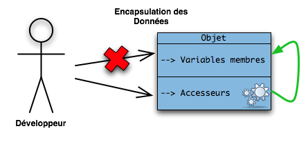
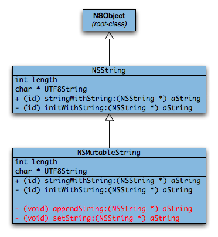
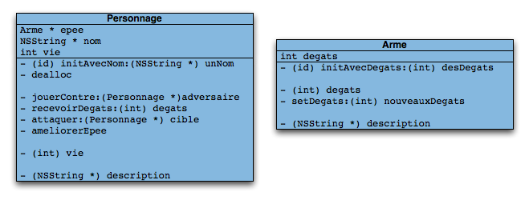

L'Objective-C est un langage de programmation compilé, multi-plates-formes, libre et orienté objet.
C'est un langage assez puissant, basé sur le C. C'est en fait du C auquel on a ajouté de l'orienté objet, un peu comme le C++. :)
Ce tutoriel propose un apprentissage de l'Objective-C et de la programmation orientée objet dans ce langage. La première partie donne les bases du langage, et la seconde propose d'aborder des concepts plus avancés de l'Objective-C, ainsi que divers objets de la bibliothèque Foundation. ;) Enfin, la troisième partie s'inscrit dans le schéma des tutoriels de ce site et propose de mettre en application les connaissances acquises avec la bibliothèque Cocoa (qui contient aussi son lot de concepts propres).
Je vous recommande également la lecture du tutoriel de Tchouk! : Développer sous OS X avec Cocoa, qui propose une approche différente des sujets traités dans ce tutoriel. :)
Pour commencer ce tutoriel, je vous propose une introduction plutôt riche à l'Objective-C. Comme tous les langages, l'Objective-C a une histoire particulière derrière lui. En effet, il a été influencé par plusieurs langages de programmation, qui lui ont chacun apporté différents aspects.
Je parlerai également des évolutions du langage, qui n'est certainement pas resté sans développement depuis sa création. Certaines entreprises, qui méritent d'être citées pour leur contribution à l'évolution de l'Objective-C, ont eu une grande influence sur la diffusion du langage et son utilisation dans certains projets.
Brad Cox Il faut déjà situer le langage dans son contexte historique. Vers la fin des années 70, l'informatique est marquée par l'effervescence autour du système d'exploitation UNIX et par le langage de programmation C, créé par Dennis Ritchie. Le C est la base d'UNIX ; c'était un langage de programmation très utilisé à l'époque. Mais comme tout langage, le C a ses limites. Vous devez sûrement savoir que le C ne propose pas de moyens clairs pour faire de l'orienté objet. Lorsque les programmeurs ont pensé à faire évoluer le C, c'était pour favoriser l'écriture de gros programmes, qui devenaient complexes et peu efficaces en C. Pour la plupart des programmeurs, la programmation orientée objet offrait une solution à ce problème.
En 1979, Bjarne Stroustrup développe le C++, qui ajoute la POO au C. La création de l'Objective-C intervient un peu plus tard. C'est l'américain Brad Cox qui crée l'Objective-C au début des années 80. Comme le C++ à cette époque, il a pour objectif de rajouter des classes au langage C. Pour cela, Cox s'appuie sur un autre langage, le Smalltalk-80, qui est un langage orienté objet créé au début des années 70. On peut donc dire que l'Objective-C a principalement été créé à partir du langage C et du Smalltalk. ;)
Logo de NeXT
Développement
Brad Cox fit de son langage un langage libre, dont tout le monde peut analyser les standards et les réutiliser. La première entreprise à utiliser l'Objective-C dans l'un de ses projets fut NeXT, qui vendait des systèmes d'exploitation et du matériel informatique en visant un public universitaire. Le système d'exploitation en question s'appelait NeXTStep, et était écrit en Objective-C. Ce système était également basé sur un environnement BSD, ce qui en fait un système UNIX-like. La société NeXT, à la suite de problèmes financiers, se spécialisa dans la vente du système NeXTStep et arrêta de fabriquer des ordinateurs. On pourrait citer différentes créations faites sur un ordinateur NeXT : l'invention du Web par Tim Berners-Lee, ainsi que le développement de Doom et de Wolfenstein 3D par John Carmack. Les avantages de NeXTStep étaient nombreux : une API très performante et orientée objet, un bon environnement de développement, ainsi qu'une base UNIX. Mais la firme NeXT, créée par Steve Jobs à la suite de son départ d'Apple, après onze ans d'activité, a été rachetée par cette dernière en 1996. Cela donna un nouveau souffle pour Apple, qui développa un nouveau système d'exploitation pour les Macintosh basé sur NeXTStep. Aujourd'hui, NeXTStep est abandonné, mais les standards du système sont toujours présents dans les frameworksCocoa et GNUstep.
Mac OS X
Mac OS X est un système d'exploitation développé par Apple. Il est basé, comme NeXTStep, sur BSD. C'est un système propriétaire, bien que le noyau et la structure interne du système soient libres. Mac OS X dispose de plusieurs API pour le développement d'applications : Carbon (en), qui est l'API des versions de Mac OS antérieures à Mac OS X. Elle possède une interface C(++), et a été conservée pour des raisons de compatibilité. La seconde API est Cocoa, qui, arrivée avec Mac OS X, est basée sur le framework de NeXTStep (donc écrite en Objective-C). Elle possède une interface Objective-C, ce qui signifie que l'Objective-C est le langage d'utilisation de Cocoa (on peut aussi l'utiliser en Python et en Perl). Il est d'ailleurs aujourd'hui fortement recommandé de développer des applications avec Cocoa sous Mac.
OPENSTEP et GNUstep
Vers la fin de sa vie, NeXT a développé, en partenariat avec Sun Microsystems, une série de standards pour des frameworks orientés objet, appelés OpenStep (en). La principale implémentation de ces standards est l'API OPENSTEP. C'est une bibliothèque qui reprend l'API de NeXTStep, mais elle est libre, contrairement à NeXTStep. OPENSTEP fonctionnait sur Mac OS, sur Solaris et même sur Windows NT (note : Mac OS X ne rentre pas aujourd'hui dans les standards OpenStep).
GNUstep GNUstep, quant à lui, est une autre implémentation des standards OpenStep, bien que sa création remonte avant celle des standards. C'est un projet libre qui vise à offrir une implémentation accessible, d'abord de l'API de NeXTStep, puis de l'API Cocoa (on pourrait le comparer à Mono par rapport à .NET). Mais en plus de fournir une API, GNUstep propose aussi des outils de développement, ainsi que leurs propres améliorations de Cocoa.
Aujourd'hui, Cocoa et GNUstep sont les principales implémentations (ou évolutions) des standards OpenStep, et pour ainsi dire les deux seules bibliothèques écrites en Objective-C et utilisables dans ce langage. ;)
Objective-C 2.0
En 2007, à l'occasion de la sortie de Mac OS X v10.5 (dit Leopard), Apple a proposé une mise à jour des standards de l'Objective-C. La firme a développé de nouveaux outils de gestion de mémoire dynamique, regroupés dans un système nommé garbage collector (ramasse-miettes), qui simplifie et rend le code Objective-C plus performant. Il y a eu aussi quelques modifications de syntaxe, ainsi que des ajouts de mots-clés, qui simplifient la programmation des objets. ;)
Au début de ce tutoriel, nous n'aborderons pas l'Objective-C 2.0. Bien que celui-ci soit totalement compatible avec l'Objective-C classique, nous apprendrons à gérer la mémoire avec le système « classique », et utiliserons la syntaxe normale (les ajouts de l'Objective-C 2.0 dans ce domaine sont quand même mineurs :-° ).
Voici la définition de l'Objective-C dans son article Wikipédia français :
Citation : Wikipédia - Objective-C
L'Objective-C est un langage de programmation orienté objet réflexif. C'est une extension du C ANSI, comme le C++, mais qui se distingue de ce dernier par sa distribution dynamique des messages, son faible typage, son typage dynamique et son chargement dynamique.
Je vais expliquer point par point cette définition.
Je l'ai répété plusieurs fois, l'Objective-C est un langage orienté objet. Ça veut dire qu'il intègre (presque) toutes les notions de POO existantes. La POO est donc une très grosse partie du langage. Nous l'aborderons d'ailleurs dans le prochain chapitre. ;)
L'Objective-C est un langage réflexif. Cela veut dire qu'il a une capacité à se modifier à l'exécution. Par exemple : imaginez qu'en C, vous créiez une variable vie de type int. Une fois le code compilé, impossible de changer ces informations, n'est-ce pas ? Eh bien, la réflexivité le permet : on peut définir le type d'une variable en fonction d'une chaîne de caractères par exemple. En gros, le type d'une variable peut changer à l'exécution, cela dépend souvent des actions de l'utilisateur. La réflexivité est une notion un peu avancée, que l'on ne verra pas avant un petit moment. ^^
L'Objective-C est une extension du C. Cela veut dire que l'Objective-C se construit autour des mécanismes du C ; il hérite donc de sa syntaxe. Mais l'Objective-C est une stricte surcouche du C. Cela veut dire que n'importe quel code écrit en C est compilable par un compilateur Objective-C. Il n'y a aucune incompatibilité entre le C et l'Objective-C, contrairement au C++.
L'Objective-C utilise un système de messages : c'est la clé de voûte de l'Objective-C. C'est une partie du langage qui est héritée de Smalltalk. Les messages servent principalement à la POO, nous en verrons dans le prochain chapitre.
L'Objective-C possède un typage dynamique et faible : le type d'une variable est défini à l'exécution, et il peut changer en cours de route. Pour plus d'informations sur le typage, je vous conseille ce tutoriel : Le typage : présentation thématique et historique.
L'Objective-C possède un système de chargement dynamique. Ça ne veut pas dire grand-chose comme ça, mais en réalité, l'Objective-C s'exécute dans un runtime, à la manière de Java. Il y a donc une machine virtuelle qui se charge de distribuer les messages, de créer les objets et les classes, d'évaluer le type des variables, etc. En revanche, il n'y a pas besoin d'installer une machine comme Java, et elle est beaucoup plus légère que celle de Java. :)
Organisation du code
Tout comme un fichier de code C, l'Objective-C attribue sa propre extension à un fichier de code Objective-C. Par exemple : un_fichier.m (l'extension est donc « m »). Les fichiers headers, en revanche, ne changent pas leur extension : on a toujours le fichier « .h ». Il y a aussi des conventions d'organisation du code pour les objets, mais nous verrons cela plus tard.
Quels logiciels ?
Comme d'habitude : un éditeur de texte, un compilateur et un débogueur. Il n'y a aucun des trois qui soit spécifique à l'Objective-C, sauf peut-être le compilateur : GCC est le plus répandu pour l'Objective-C. Il y a également des IDE disponibles pour l'Objective-C : sous Mac, le plus adapté est Xcode. C'est un IDE fourni avec Mac OS X. Sous GNU/Linux, il y a ProjectCenter.app, qui fait partie du projet GNUstep. Nous verrons également deux logiciels pour développer des interfaces graphiques : Interface Builder sous Mac OS X et Gorm.app avec GNUstep.
Où se documenter ?
Nous utiliserons beaucoup des objets du framework Foundation. C'est une collection d'objets qui sont indispensables au bon fonctionnement de l'Objective-C. La documentation officielle d'Apple se trouve sur leur site : http://developer.apple.com/mac/library [...] ic/index.html. La documentation officielle de GNUstep se trouve sur leur wiki : http://wiki.gnustep.org/index.php/Foundation ; elle est en revanche fortement incomplète. Il y a dans ces documents la liste de tous les objets disponibles, ainsi que leur usage, etc. Vous n'aurez dans un premier temps pas besoin de la documentation, mais gardez-la toujours à portée de main, c'est le bien le plus précieux du programmeur. :p
L'Objective-C est un langage multi plates-formes, bien que certains le cantonnent à Mac OS X et Cocoa. GNUstep est fonctionnel sur les trois systèmes d'exploitation majeurs : GNU/Linux, Mac OS X et (oh surprise :p ) Windows. Sur Mac OS X, par contre, il n'y a pas besoin d'installation supplémentaire : les Xcode tools contiennent tous les logiciels qu'il faut pour développer des applications. Sous GNU/Linux, il faudra installer GCC pour pouvoir compiler du code Objective-C, et GNUstep pour avoir les bibliothèques spécifiques au langage et les outils de développement. Pour cela, il vous faudra installer les paquets gnustep et gnustep-devel. Sous Windows, la procédure est décrite sur cette page. Je ne sais pas en revanche si la man?uvre est fiable. :-°
Compilation
En théorie, GCC peut compiler de l'Objective-C sans poser de problème, avec l'option -x objective-c. En revanche, pour pouvoir profiter de tous les outils fournis par GNUstep et Cocoa, il faut linker avec les bibliothèques, c'est-à-dire les « inclure » dans le programme. Sur Mac OS X, Xcode fait cela automatiquement. Pour créer un nouveau projet en Objective-C, il faut choisir le Foundation Tool dans la liste des projets disponibles.
La compilation se fait par l'habituel bouton Build de Xcode.
L'IDE principal avec GNUstep se nomme ProjectCenter.app. Une fois GNUstep installé avec les outils de développement, lancez ProjectCenter.app avec la commande suivante :
openapp ProjectCenter.app
Dans le menu en haut à gauche, sélectionnez Project > New pour créer un nouveau projet. Dans la fenêtre qui s'ouvre, choisissez un emplacement pour votre projet, ainsi qu'un nom et un type.
Pour le moment, sélectionnez le type Tool dans le menu déroulant.
Pour compiler le projet, cliquez sur l'icône du tournevis rouge, ce qui ouvre la fenêtre de compilation. Pour compiler, cliquez à nouveau sur le bouton du tournevis, cette fois dans la fenêtre de compilation.
Pour exécuter le programme, cliquez, dans la fenêtre du projet, sur le bouton avec une fusée. Cela ouvre la fenêtre d'exécution. Pour lancer le programme, cliquez à nouveau sur l'icône de la fusée. Dans le cadre blanc qui se trouve dessous, vous avez la sortie du programme (ce qu'il affiche).
Pour l'instant, contrairement à la capture d'écran, ce cadre n'affiche rien. :-° Le projet Tool ne se compose que d'un seul fichier de code : main.m. C'est ce fichier que l'on va éditer dans un premier temps, au prochain chapitre.
Voilà, j'espère que ce premier chapitre vous a plu. En tout cas, vous savez à présent ce qu'est l'Objective-C, d'où il vient et à quoi il sert. Tout au long du tutoriel, je reviendrai également sur Mac OS X et GNUstep, qui sont deux acteurs majeurs de l'Objective-C. ;)
Bon, jusqu'à présent, l'Objective-C c'était piece of pie, piece of cake. :p Et si on attaquait le code ?
L'Objective-C (souvent abrégé « ObjC ») est un langage très intéressant qui offre des possibilités immenses, pour peu que vous sachiez vous en servir. :)
L'approche est assez déroutante, c'est pourquoi je vais commencer par des choses simples pour ce chapitre. Nous découvrirons les différences entre le C et l'Objective-C, ainsi que le fonctionnement des objets, dont on verra les détails dans d'autres chapitres. Les connaissances acquises dans ce premier chapitre seront utiles tout au long du tutoriel, et vous permettront de survivre quand on attaquera les objets du framework Foundation. ;)
Nous avons vu dans le chapitre précédent comment créer un nouveau projet (avec Xcode ou ProjectCenter.app). Chacun de ces projets se base sur un unique (pour le moment) fichier de code source Objective-C. Il porte l'extension *.m.
Pour commencer, voyons le contenu de ce fichier :
#import <Foundation/Foundation.h>
int main (int argc, const char * argv[])
{
NSAutoreleasePool * pool = [[NSAutoreleasePool alloc] init];
// insert code here...
NSLog(@"Hello, World!");
[pool drain];
return 0;
}
Le code par défaut peut changer selon les IDE. Ce code est issu de Xcode. Il est similaire à celui de PC.app, mais par souci d'exactitude et de cohérence, je demanderai aux utilisateurs de PC.app de prendre ce code à la place.
L'Objective-C est assez similaire au C ?! C'était une blague ? Il n'y a que des crochets partout !!!
En effet, c'est assez déroutant au premier abord, mais on se fait vite aux crochets, d'autant plus que c'est le point de pivot de l'Objective-C.
Pas à pas
On va commencer en douceur et voir ce code ligne par ligne.
#import <Foundation/Foundation.h>
Cela est une directive de préprocesseur. Vous devez déjà savoir ce que c'est. La seule nouveauté est la directive #import ; elle est très similaire à #include, à ceci près : elle empêche les inclusions infinies, vous n'avez donc plus besoin de protéger les headers avec l'éternel #ifndef. Cette ligne inclut le fichier Foundation.h du framework « Foundation ». Le framework Foundation contient tous les objets nécessaires au bon fonctionnement de l'Objective-C. Il ne sert pas à créer de GUI.
int main (int argc, const char * argv[])
Cette ligne ne devrait pas être nouvelle pour vous, à part peut-être le const devant le char, qui n'affecte pas grand-chose : c'est une question de goût.
NSAutoreleasePool * pool = [[NSAutoreleasePool alloc] init];
Ne vous préoccupez pas de cette ligne pour le moment, on l'abordera plus tard.
NSLog(@"Hello, World!");
Cette ligne, vous l'aurez deviné, affiche « Hello, World! » dans la console ; mais pas seulement : elle affiche également les informations spécifiques à votre programme, comme la date, le PID de votre processus, etc. Elle sert principalement à écrire dans les fichiers *.log et ainsi à tracer les bogues, mais elle est très peu utilisée pour les utilitaires en console, tels que le Foundation Tool. Le symbole arobase (@) devant la chaîne de caractères indique que c'est une chaîne d'Objective-C, et non une chaîne C. Exemple :
@"Bonjour !" // Ceci est une chaîne ObjC
"Salut !" // Ceci est une chaîne C
En Objective-C, on peut bien sûr mélanger les deux, mais il est préférable de prendre l'habitude de travailler avec des chaînes Objective-C. La plupart des fonctions que vous allez utiliser vont attendre une chaîne Objective-C.
[pool drain];
Ceci est un message, pour les plus curieux. On verra plus tard ce qu'ils signifient.
return 0;
Sans commentaire ? :D
Nouveautés
À présent, je vais expliquer quelques nouveaux points de l'Objective-C par rapport au C. Tout comme le C++, l'Objective-C fait quelques ajouts au langage C pour faciliter son utilisation. Voyons d'abord le type BOOL.
BOOL est un type de booléen. Comme il en manquait un au C (bien qu'on n'en ait pas vraiment besoin), les créateurs de l'Objective-C ont décidé de le rajouter. Une variable de type BOOL se déclare comme n'importe quelle autre variable ; exemple :
BOOL estRouge;
Un BOOL ne peut, comme tout bon booléen, avoir que deux valeurs : YES et NO.
BOOL estRouge = YES;
estRouge = NO;
if (estRouge)
//...
else if (!estRouge)
//...
Vous avez compris le principe. En fait, il n'y a pas tellement de différences entre le C et l'Objective-C tant qu'on ne touche pas à l'orienté objet. On peut voir l'apparition d'un autre type de variables : id. Nous l'aborderons dans la partie suivante, qui sera déjà plus avancée en terme de différences.
C'est dans cette partie que l'on apprendra à déchiffrer puis comprendre le code orienté objet que nous avons vu dans l'extrait au-dessus.
Les objets
Je vous rabats les oreilles avec la programmation orientée objet et les objets depuis tout à l'heure, il serait donc temps de mettre les choses au clair. Commençons par voir un peu ce qu'est la programmation orientée objet. Pour faire simple, c'est une façon de programmer qui utilise des objets. Les objets sont un type de variables, comme un int. Évidemment, ce n'est pas aussi simple que ça ; je vais expliquer ce qu'est un objet tout de suite, pour éviter les confusions.
Vous vous souvenez des structures, ces variables composées de sous-variables ? Voici un exemple pour vous rafraîchir la mémoire :
On peut accéder aux sous-variables par le point (.), comme ceci :
struct Personne monVoisin;
monVoisin.age = 34;
Imaginez un objet comme une structure. Il contient des sous-variables. Mais en plus de ces variables, il contient autre chose (sinon, on utiliserait une structure toute bête) : l'objet peut contenir des fonctions, qui vont servir à manipuler les variables internes, qui sont l'interface. Les fonctions sont appelées méthodes.
Les objets simplifient les fonctions qui servent à manipuler les structures dans une bibliothèque comme la SDL. Les fonctions sont intégrées à la structure.
Voici un schéma pour mieux illustrer ça :) :
Le type « objet » en Objective-C est le type id. On déclare un objet comme ceci :
id unObjet;
Dans cet exemple, unObjet est générique et ne fait absolument rien, il n'a aucune caractéristique.
Comme je l'ai dit, un objet a aussi des méthodes, fonctions qui agissent sur ses variables internes. Voici comment procéder pour appeler la méthode d'un objet :
[unObjet uneMethode];
On dit qu'on envoie un message à l'objet. Nous avons vu dans le premier chapitre que c'est le runtime de l'Objective-C qui s'occupe des messages, à l'exécution du programme ; voici comment cela se passe (en version simplifiée :) ) :
La syntaxe d'un message est un peu particulière. Ce qu'il y a entre crochets est le contenu du message, séparé en deux parties : à gauche, le receveur est l'objet qui va recevoir le message et exécuter la méthode appelée ; à droite, c'est la méthode elle-même.
[receveur methode];
Un message peut aussi prendre des paramètres :
[receveur methode:parametre];
On a rajouté au nom de la méthode deux-points, aussi appelés colon en anglais. Notez que ces deux-points font partie du nom de la méthode. Si on veut donner plusieurs paramètres à une méthode :
Quelle est donc la différence entre la première et la deuxième ? Lorsqu'on a plusieurs paramètres, on ajoute au nom de la fonction des labels. Ils servent à séparer les différents paramètres. Un label se compose de : et de texte, comme dans le second exemple. L'avantage de rajouter du texte, c'est la différenciation des paramètres. Dans la première ligne, on ne peut savoir dans quel ordre il faut donner les paramètres, ni même quels paramètres donner. Dans la deuxième, la méthode nous dit clairement ce qu'il faut envoyer. Le nom de la méthode est aussi différent. Dans le premier cas, le sélecteur (le nom de la méthode) est couleurAvec:::, dans le second cas il est couleurAvecRouge:vert:bleu:. Cela peut paraître un peu lourd au premier abord, mais ça évite beaucoup de prises de tête avec des fonctions qui prennent douze arguments et des allers et retours dans la documentation.
À présent, nous allons étudier un petit bout de code :
id unObjet = nil;
[unObjet uneMethode];
unObjet
est de type id, c'est-à-dire un objet générique. En réalité, unObjet est un pointeur. Tous les objets en Objective-C sont des pointeurs. Ici, on met la valeur du pointeur à nil, qui est un équivalent de NULL, mais pour les objets. Ensuite, on envoie un message à unObjet, qui lui dit d'exécuter la méthode uneMethode.
Mais si l'objet est initialisé avec nil, c'est autorisé de lui envoyer un message ?
Oui, on peut parfaitement le faire. Un objet qui a pour valeur nil peut recevoir toutes sortes de messages. Évidemment, il ne réagira pas, puisque ce n'est pas un objet spécifique.
Il existe plusieurs types d'objets. Par exemple, vous utilisez dans un programme des objets qui représentent des formes dessinées à l'écran. Mettons un carré dans votre dessin. Il faut donc un pointeur (qui nous servira d'objet) de type Carre. Ensuite, il faut initialiser ce pointeur, c'est-à-dire allouer la mémoire pour les variables internes et les méthodes.
id uneForme = [Carre alloc];
On exécute donc la méthode alloc de l'objet Carre. C'est un objet assez spécial dont nous aurons l'occasion de reparler plus tard. Sachez seulement que c'est un objet constructeur : il construit l'objet dont nous avons besoin en suivant un plan, une procédure. La méthode alloc alloue la mémoire pour les variables et les méthodes. Elle retourne un objet de type id, qui a toutes les caractéristiques d'un Carre. Le problème, c'est qu'elle n'initialise pas les variables. Ça, c'est le rôle de la méthode init de notre objet alloué :
[uneForme init];
Elle retourne un id. Pour rendre la syntaxe moins chargée, on peut combiner les deux messages :
id uneForme = [[Carre alloc] init];
Dans les deux méthodes qui s'enchaînent (alloc -> init), Carre est le premier receveur. Le receveur du message init est l'objet retourné par [Carre alloc]. Le tout est stocké dans le pointeur uneForme de type id. Notre objet est donc prêt à être utilisé. Vous aurez peut-être remarqué qu'on ne donne aucune valeur pour les dimensions du carré. Cela aurait pu se faire comme ceci :
id uneForme = [[Carre alloc] initAvecDimension:4];
On appelle la méthode initAvecDimension pour donner une longueur aux côtés du carré. On peut à présent faire toutes sortes de choses :
[uneForme positionnerEnX:12 y:23];
[uneForme rotation:45];
// etc.
Pour se débarrasser de uneForme, il faut libérer la mémoire avec la méthode release :
[uneForme release];
uneForme = nil;
Notez que la deuxième ligne n'est pas obligatoire. Elle n'est utile que dans le cas des objets de type id, si on veut les réutiliser. Ce code, par exemple, est parfaitement valide :
Quoi ? Il est possible de changer le type d'un objet en cours d'exécution ?
Oui, cela s'appelle le typage dynamique. Comme id est un objet générique (dont on ne connaît pas le type exact), il peut devenir n'importe quel objet. On ne peut connaître son type qu'à l'exécution. Pour « parer » à cela, il faut donner un type spécifique à notre pointeur.
Carre * unCarre = [[Carre alloc] init];
Attention, cette fois on met l'étoile du pointeur. Quand on crée un objet de type id, elle est implicite. À présent, unCarre est de type Carre et ne peut être changé en un autre type. Il peut prendre la valeur nil, ce n'est pas interdit.
Reprenons le code du « Hello, World! » :
#import <Foundation/Foundation.h>
int main (int argc, const char * argv[])
{
NSAutoreleasePool * pool = [[NSAutoreleasePool alloc] init];
// insert code here...
NSLog(@"Hello, World!");
[pool drain];
return 0;
}
Vous devriez comprendre les lignes surlignées.
Mais l'objet pool n'est pas libéré, où est le [pool release] ?
En fait, la méthode drain de pool libère la mémoire que prenait pool, en plus de remplir la fonction principale d'un NSAutoreleasePool, que l'on abordera plus tard.
Maintenant que vous savez vous servir des objets en Objective-C, nous allons voir un objet clé du framework Foundation : NSString.
NSString
Vous l'avez deviné, NSString est un objet qui gère des chaînes de caractères. On pourrait le comparer à string en C++, à quelques grosses différences près. :D
NSString n'échappe pas à la règle, voici comment créer une NSString :
id chaine = [[NSString alloc] init];
Le problème, c'est que NSString est défini comme un objet immuable. Cela veut dire qu'une fois la chaîne « gravée » dans l'objet, on ne peut la changer. Donc si on l'initialise de cette façon, l'objet sera inutile car il ne contiendra pas de chaîne. Pour l'initialiser avec une chaîne, il faut utiliser la méthode initWithUTF8String:. Le nom de cette méthode peut paraître bizarre : pourquoi donc UTF-8 ? Une petite explication s'impose.
Les chaînes de caractères
Le système des chaînes de caractères en Objective-C n'est pas le même que celui du C. L'Objective-C utilise des symboles différents autres que les guillemets pour désigner une chaîne. Voici deux façons de manipuler une chaîne, en C et Objective-C, avec deux méthodes similaires : printf() et NSLog().
printf("Voici une chaine de caractères en C.");
NSLog(@"Voici une chaine de caractères en Objective-C.");
Notez bien le symbole @, que l'on a d'ailleurs déjà vu dans le « Hello, World! » au même endroit. Une chaîne en Objective-C se délimite comme ceci : @"chaine". Mais j'ai déjà parlé de ça un peu plus haut.
Quel rapport avec la méthode d'initialisation de NSString ?
J'y viens. Quand on exécute la méthode initWithUTF8String:, celle-ci attend en paramètre une UTF8String, autrement dit une chaîne C. Cette méthode, en revanche, n'est pas extrêmement utile. En effet, comme en C++, pourquoi utiliser des char [] quand on peut utiliser des string ? La méthode d'initialisation de NSString qui fait appel aux chaînes Objective-C (aux NSString en fait) est initWithString:. Exemple :
Ces deux syntaxes sont absolument équivalentes, mais je vous conseille vivement d'utiliser la première, d'autant plus que les chaînes que vous manipulerez avec Foundation et Cocoa seront toujours des NSString.
Il ne reste plus qu'à libérer la mémoire avec release.
[chaine release];
On peut aussi initialiser avec d'autres fonctions. Il y a la méthode de classe stringWithString:. Une méthode de classe est une méthode qui appartient à un objet de classe, cet objet « usine » qui sert à construire des objets courants. Donc stringWithString: appartient à l'objet de classe NSString. Voici comment on l'utilise :
id chaine = [NSString stringWithString:@"Hello World!"];
La particularité de cette méthode est la gestion de la mémoire. Vous pouvez voir que l'appel à la méthode alloc, également méthode de NSString, a disparu. Plus d'alloc, plus de release. :p La mémoire est gérée automatiquement. La prochaine méthode d'initialisation est la plus simple, elle est strictement équivalente à celle que nous venons de voir avec stringWithString: :
NSString * chaine = @"Hello World!";
Simple, isn't it ? La gestion de la mémoire est la même que précédemment, pas d'alloc, pas de release.
D'autres méthodes
Les NSString sont des objets assez complets, et je vais m'efforcer de faire une liste sommaire des différentes méthodes qu'elles proposent.
length : comme son nom l'indique en anglais, cette méthode retourne le nombre de caractères d'une chaîne.
int nb_caracteres = [chaine length];
characterAtIndex:(int) index : prend en paramètre un entier qui représente le numéro de la case mémoire du caractère que l'on veut récupérer. 0 est l'index de la première case, comme en C. Attention toutefois, on ne peut pas utiliser les crochets comme en C ou en C++.
Si on donne en paramètre un index plus grand que la taille de la chaîne, la méthode envoie une exception. C'est une erreur qui peut être traitée, on verra plus tard de quelle manière.
stringByAppendingString: (NSString *) chaine : prend en paramètre une autre NSString pour l'ajouter à la fin de la chaîne receveuse du message, et retourne une nouvelle chaîne (rappel : les NSString sont immuables).
NSString * hello = @"Hello, ";
NSString * name = @"my name is prs !";
NSString * presentation = [hello stringByAppendingString:name];
initWithFormat: (NSString *)format, ... : cette méthode d'initialisation est un peu spéciale. Elle fait appel aux formats (rien à voir avec les formats de fichiers). Pour les comprendre, je vous propose un bout de code en C :
printf("Nous sommes le %s, il fait %d degrés et je vais au boulot.", date, temperature);
La chaîne comporte des %s, des %d, qui vont être remplacés par les valeurs de date et temperature. initWithFormat: fait exactement la même chose que printf() :
id chaine = [NSString stringWithFormat:@"Bonjour, mon nom est %@ et j'ai %d ans !", nom, age];
Ici, on utilise la méthode de classe stringWithFormat:, mais le résultat est le même. Vous remarquerez le %@, qui sert à insérer une NSString dans une autre. C'est une sorte de remplacement pour %s. Attention tout de même, les virgules que l'on met entre les différentes valeurs des symboles de la chaîne formatée ne font pas partie du nom de la fonction. D'ailleurs, dans la documentation, initWithFormat: ne comporte pas de virgules. Ne les confondez pas en revanche avec les :, eux séparent des arguments définis dont on connaît le type (avec printf(), ceux-ci sont indéfinis), et font partie du nom de la fonction. Souvenez-vous de couleurAvecRouge:vert:bleu:.
UTF8String : retourne une chaîne de type C si jamais vous en avez besoin.
char * chaineC = [chaineObjC UTF8String];
isEqualToString: (NSString *) autreChaine : retourne un booléen qui vaut YES si les chaînes sont égales (si elles ont le même id ou si les caractères sont les mêmes dans le même ordre).
if ( [chaine1 isEqualToString:chaine2] )
// ...
Les fonctions de recherche dans une NSString utilisent des objets et des structures qui n'ont pas d'intérêt à être vus maintenant.
Pour une liste exhaustive des différentes fonctions de NSString, allez voir la documentation sur le site d'Apple : NSString.
Pour utiliser une chaîne de caractères que vous pouvez modifier après l'initialisation, utilisez NSMutableString. Les méthodes d'initialisation sont les mêmes qu'avec NSString, bien qu'elles n'apparaissent pas dans la documentation.
Voici le chapitre terminé. (Déjà ?!) Mine de rien, vous avez fait un sacré bout de chemin. Dans le prochain chapitre, nous verrons comment créer nos propres objets, qui répondent à des méthodes que nous aurons nous-mêmes écrites. N'hésitez pas à revoir ce chapitre, il explique les bases de l'Objective-C qui seront essentielles pour la suite, surtout dans les deux prochains chapitres. ;)
À présent que vous avez fait vos premiers pas en Objective-C, je vous propose d'entrer dans le vif du sujet et d'attaquer un très gros morceau du langage, même si on n'est qu'au début du tutoriel (ne vous inquiétez pas, j'en garde pour la fin :p ).
Au menu aujourd'hui : les interfaces, les méthodes, et l'implémentation, le tout sur plusieurs classes (Voiture, Personnage, etc.) qui nous suivront sur quelques chapitres. ;)
On a beaucoup parlé des objets dans le dernier chapitre. Pour récapituler, un objet est constitué de sous-variables (ou variables membres), ainsi que de méthodes.
Un objet répond à un type, c'est-à-dire que deux objets du même type possèdent les mêmes variables et les mêmes méthodes. On peut donc les comparer. Ils sont également issus du même procédé de fabrication. Et ils ont tous deux la même classe. On dit qu'un objet issu d'une classe est une instance de cette classe.
Les classes, plan de fabrication
Une classe définit en réalité les variables membres et les méthodes d'un objet. La classe est le squelette d'un objet. Elle donne à l'objet différentes caractéristiques : une interface, ainsi que des méthodes, et bien sûr leur implémentation.
L'interface
L'interface, c'est l'ensemble des variables membres. Elle est la même pour chaque objet d'un type donné. En revanche, la valeur des variables peut changer en cours d'exécution (incrémentation de compteur, changement de NSString, etc.). On pourrait comparer l'interface d'un objet avec une structure C, à un seul point près : les variables sont inaccessibles depuis l'extérieur.
Ça veut dire quoi exactement ?
Prenons une structure en C toute simple. Une fois une variable créée de type struct QuelqueChose, on peut en modifier les sous-variables :
Avec un objet, on ne peut tout simplement pas. En fait, ce n'est pas entièrement vrai. Le programmeur ne peut pas modifier lui-même la valeur des variables membres : c'est l'objet qui va modifier ses propres variables. Le fait que les variables ne soient pas accessibles depuis l'extérieur de l'objet s'appelle l'encapsulation des données.
Comme le montre le schéma, on ne peut modifier les variables membres que depuis les méthodes de l'objet. C'est le principe de l'encapsulation. :)
Mais alors, comment fait-on quand on veut modifier les variables « à la main » ?
Une des solutions à l'encapsulation est de définir des accesseurs. Nous verrons ce qu'ils sont au cours de ce chapitre.
Les méthodes
Le rôle d'une classe est également de définir les méthodes d'un objet, ainsi que leur implémentation (rappel : une méthode se définit en deux parties, le prototype et l'implémentation).
On distingue deux types de méthodes : les méthodes qui appartiennent à un objet, dites méthodes d'instance, et les méthodes qui appartiennent à la classe, dites méthodes de classe. Quelle est la différence entre les deux ? Les méthodes d'instance requièrent qu'un objet soit créé pour pouvoir être appelées. Par exemple :
Vous remarquerez que le message n'est pas adressé à l'objet chaine, mais à la classe NSMutableString. La méthode n'a pas besoin de l'objet chaine, car à l'exécution de stringWithString, celui-ci n'existe pas encore.
S'organiser
En Objective-C, la convention dicte au programmeur de séparer les déclarations d'une classe de l'implémentation des méthodes. Une classe se constitue de deux fichiers : un *.h, qui contient l'interface et les prototypes, et un *.m (compilé) qui contiendra l'implémentation des méthodes.
Maintenant qu'on a établi quelques bases, voyons un peu de code (dans un fichier *.h) :
@interface Voiture : NSObject
{
int kilometres;
int essence;
}
@end
On retrouve bien ici le symbole @ qui sert à marquer les mots-clés de l'Objective-C. La première ligne sert à déclarer la classe Voiture, qui hérite de NSObject, la classe de base pour tout objet. Contrairement au C++, tous les objets doivent impérativement hériter de NSObject. Cette classe définit des variables et des pointeurs nécessaires au bon fonctionnement d'un objet. Nous verrons l'héritage plus en détail au prochain chapitre. ;)
Les variables membres sont ici kilometres et essence, toutes deux de type int. Un objet, comme une structure C, peut contenir tout type de variables ainsi que tout type d'objets, même inconnu, car on peut utiliser id qui, je le rappelle, symbolise un objet générique.
Ici, on utilise un objet id dont on ne connaît pas le type exact (mais que l'on peut deviner dans cet exemple). On utilise aussi un objet NSArray, qui est un tableau dynamique, un peu comme std::vector en C++, sauf que le NSArray n'a pas de limite au niveau du type de l'objet contenu : un objet Voiture peut très bien se trouver avec un objet Personne ou NSString.
C'est ici que ça devient intéressant. On va voir à présent comment définir les méthodes qui vont agir sur les variables qui constituent l'interface. Une méthode se définit, en Objective-C, différemment d'une fonction C classique. Comme une fonction, il faut énoncer le type de la méthode, le nom de la méthode, ainsi que les différents paramètres dont elle a besoin. Mais en plus de ça, il faut définir si une méthode est une méthode de classe ou une méthode d'instance.
Commençons par - init, la méthode d'initialisation.
@interface Voiture : NSObject
{
id moteur;
NSArray * passagers;
}
- (id) init; // Voici la déclaration de - init
@end
Déjà, la première question que l'on se pose est : « Ça veut dire quoi le moins devant la déclaration ? » C'est justement pour ça que j'ai parlé des méthodes de classe. Le symbole - veut dire « méthode d'instance ». Ainsi, quand je parle de méthodes d'instance, je mets le symbole - devant, pour faire la différence.
Mais alors, comment définit-on une méthode de classe ?
Avec le symbole +. Voici une méthode de classe :
@interface Voiture : NSObject
{
id moteur;
NSArray * passagers;
}
+ (id) voitureAvecPassagers: (NSArray *) passagers; // Méthode de classe
- (id) init; // Méthode d'objet
@end
Ainsi, si on veut une Voiture initialisée avec des passagers, on procédera de cette manière :
Évidemment, comme dans tout langage de programmation, il y a des conventions à respecter pour être compatible avec les autres objets et bibliothèques. En effet, si vous créez une méthode dans une classe et que vous ne respectez pas les conventions, les programmeurs qui utiliseront votre classe auront du mal à en deviner le fonctionnement.
Nommer une méthode
Pour nommer une méthode, on commence toujours par une lettre minuscule : init. À chaque nouveau mot ajouté au nom de la méthode, on ajoute une majuscule : stringWithString. Pour les labels (texte avant les deux-points), on utilise des minuscules : indexOfObject: inRange: (notez que inRange commence par une minuscule, suivie d'une majuscule pour chaque nouveau mot).
Chaque texte avant un paramètre annonce celui-ci : on sait grâce au nom de la méthode ce qu'elle attend. Ainsi, la méthode indexOfObject: inRange: attend un objet de type id et une structure de type NSRange (attention : ce n'est pas un objet, mais une structure C classique).
Bien entendu, pour lire et écrire des noms de méthode conformes à ces règles (qui ne sont en aucun cas obligatoires), il faut des petites connaissances en anglais (savoir ce qu'est un range par exemple).
Mais il y a également des méthodes qu'il faut absolument définir, et qui reprennent toujours le même nom.
Les méthodes d'initialisation
On l'a déjà rencontrée un nombre important de fois (qui va rapidement devenir incalculable) ; la méthode - init est probablement la plus importante méthode d'un objet : c'est elle qui va initialiser toutes les variables d'un objet. Ce serait le constructeur si on parlait de C++.
Chaque nouvelle classe que vous créez doit implémenter cette méthode. Si vous ne le faites pas, c'est la méthode d'initialisation de NSObject qui sera appelée, et celle-ci ne fait pas grand-chose à l'objet que vous voulez définir (si on parlait d'une Voiture, la méthode d'initialisation de NSObject ne ferait que réserver un volume pour la Voiture).
- init doit donc toujours figurer dans une classe. Elle doit également toujours retourner un objet de type id.
- (id) init;
Comment fait-on si on veut passer des arguments à - init ?
C'est là que l'on fait intervenir les labels. Nous avons vu dans le chapitre précédent que les labels servaient à introduire de nouveaux paramètres. Voici comment écrire le prototype d'une fonction qui comporte des labels et des paramètres :
tout d'abord, on décide si notre méthode est une méthode de classe ou non (+ ou -). Ensuite, on définit le type de la fonction (le type de la valeur de retour) entre parenthèses : id, int, NSArray *, etc. On choisit le nom de notre méthode selon la convention : ici, pour une méthode d'initialisation, on va créer un objet avec des valeurs ou d'autres objets. On va utiliser le mot-clé « avec », ou with en anglais. Au début, je vais écrire le nom des méthodes en français, mais il faudra s'habituer à l'anglais, car toutes les méthodes sont écrites en anglais dans Cocoa ou Foundation, ainsi que dans la documentation ;
on a donc - (id) initAvec. Il faut à présent décrire le prochain paramètre ; dans le cas de notre voiture, on va dire un moteur (pourquoi pas, après tout ^^ ) : - (id) initAvecMoteur ;
on termine le label par deux-points. C'est ici que le paramètre entre en scène. Son type est indiqué entre parenthèses (il ne faut pas oublier l'étoile dans le cas d'un objet spécifique, NSString * par exemple) : - (id) initAvecMoteur: (Moteur *) moteur ou - (id) initAvecMoteur: (id) moteur ; les deux sont possibles, car id n'est pas un objet spécifique. L'avantage, c'est que l'on peut passer n'importe quel objet, l'inconvénient, c'est qu'on ne peut pas savoir si l'objet donné est un moteur ou non :-° (à la compilation seulement) ;
si on a besoin d'un autre paramètre, il suffit de rajouter un label : - (id) initAvecMoteur: (Moteur *) moteur couleur: (NSColor *) couleur;(ne pas oublier le point-virgule).
Implémentation des méthodes
À présent, il faut écrire le code de ces fonctions. Une interface se trouve dans un fichier *.h et l'implémentation va, elle, se trouver dans un fichier *.m. Voici le code de base d'une implémentation :
On retrouve bien les mots-clés de l'Objective-C qui commencent par @. Ici, on indique que l'on implémente les méthodes de la classe Voiture. On va donc voir de plus près l'implémentation de - init.
Quelques mots-clés
À l'intérieur d'une classe, il y a des expressions qui sont très utiles pour se référer à l'objet en cours d'utilisation, ou encore sa classe, ou la classe dont il hérite. self est un pointeur qui pointe sur l'objet qui exécute la méthode (dans notre cas, une instance de Voiture). C'est très utile quand on veut faire exécuter d'autres méthodes à un objet pendant l'exécution de la méthode d'initialisation. Par exemple :
- (id) init
{
[self faireLePlein];
}
Mais self sert principalement à renvoyer l'objet initialisé : en effet, - init doit toujours renvoyer l'objet initialisé.
- (id) init
{
[self faireLePlein];
return self;
}
Parlons brièvement d'héritage : la classe Voiture hérite de NSObject. Elle a donc toutes les caractéristiques d'un NSObject. Mais si vous voulez créer un nouveau bouton d'interface graphique, votre classe doit hériter de NSButton, et comme vous n'avez aucune idée de la façon dont s'initialise un NSButton, il faut appeler la méthode - init d'une instance de la classe mère. Pour nous faciliter la vie, les créateurs de l'ObjC ont introduit le mot-clé super qui symbolise cet objet. ;)
- (id) init
{
[super init];
return self;
}
// ou encore
- (id) init
{
self = [super init];
if (self) {
// du code...
return self;
}
else
return nil;
}
Ici, on teste la valeur retournée par le message [super init] pour trouver les erreurs. Si jamais la valeur obtenue est nil, alors on retourne nil.
Ensuite, dans l'emplacement où j'ai écrit // du code..., il faut initialiser les variables de l'objet, exécuter différentes méthodes qui vont rendre l'objet utile. Il y a donc deux choses à faire impérativement dans la méthode - init : appeler la méthode d'initialisation de la classe mère (avec [super init]) et retourner l'objet créé (avec return self). C'est la convention.
Les accesseurs
On entend souvent parler de méthodes accesseurs en POO. Ce sont des méthodes qui servent à modifier les variables d'un objet depuis l'extérieur.
Il n'y a que les méthodes d'un objet qui peuvent toucher aux variables, à cause de l'encapsulation des données. Pourquoi s'embêter autant ? Parce que si c'est vous qui programmez vos méthodes, il n'y a aucun risque (sauf si vous codez avec vos pieds) que l'objet fonctionne mal à cause de mauvaises valeurs de variables membres. Si on a une classe Personnage, et que le programmeur (malintentionné :pirate: ) peut mettre la valeur -100 à la vie du Personnage, que va-t-il se passer ? C'est pour cette raison que par des méthodes accesseurs, on peut vérifier la valeur entrée et éviter les bogues.

Solution à l'encapsulation Il y a une convention de nommage à respecter pour les accesseurs. Déjà, et j'ai peut-être oublié de le mentionner ( :p ), il faut deux méthodes accesseurs pour une variable : une méthode pour obtenir la valeur et une pour modifier la valeur de la variable. La méthode qui sert à obtenir le nom de la variable (que je vais appeler getter en anglais) porte seulement le nom de cette variable. Contrairement au C++ où deux écoles se disputent pour mettre le préfixe « get » aux getters, en Objective-C on a décidé de garder le nom de la variable, sans préfixe. Par contre, la méthode qui sert à modifier la valeur de la variable (le setter) porte le préfixe « set ».
Bien entendu, les getters et setters ne servent qu'à modifier les variables depuis l'extérieur. À l'intérieur d'un objet, vous utilisez les variables par leur nom :
- (id) init
{
[super init];
vie = 100;
mana = 100;
return self;
}
Voici un exemple d'implémentation d'accesseurs :
- (void) setMana: (int) aMana
{
if (aMana < 0)
mana = 0;
else
mana = aMana;
}
- (int) mana
{
return mana;
}
Créer des accesseurs pour chaque variable d'une classe peut être très long (d'ailleurs, rien ne vous oblige à le faire). En Objective-C, il y a d'autres moyens de créer des accesseurs et de modifier à distance des variables membres, mais j'en parlerai dans un autre chapitre. ;)
Encore un gros morceau à avaler... :p À présent, vous savez :
comprendre du code Objective-C ;
utiliser des objets ;
créer vos propres objets ;
et vous connaissez certaines règles de l'Objective-C.
Ça fait peut-être beaucoup pour deux chapitres, mais il ne faut pas hésiter à relire celui-ci, et surtout à pratiquer. Le prochain chapitre est un gros morceau également ; on en a parlé discrètement, mais il est un pilier de la Programmation Orientée Objet : c'est l'héritage, mes amis. ^^
J'en ai déjà parlé dans les chapitres précédents, et il est temps d'y arriver. L'héritage est probablement LE point-clé de la POO. C'est un système très efficace qui permet une réutilisation du code optimale, ainsi qu'une modularité des objets et des classes. ;)
De plus, c'est une notion facile à prendre en main (contrairement à d'autres concepts de l'Objective-C), qui nécessite juste un peu d'imagination.
Tout d'abord, expliquons l'héritage : c'est la transmission de biens d'une génération à l'autre. Cela peut être un héritage familial, culturel, etc. En terme d'informatique, on a aussi plusieurs héritages : celui des systèmes d'exploitation (Mac OS X porte l'héritage d'UNIX, mais aussi de NeXTStep), des programmeurs, des sociétés, et aussi des objets et des classes. En Objective-C, on crée des classes qui héritent d'autres classes. Il est d'ailleurs obligatoire, quand on crée une classe, de lui donner une classe mère dont elle va hériter.
Prenons comme exemple la classe NSMutableArray : celle-ci hérite de NSArray, qui elle-même hérite de NSObject.
Mais comment se fait-il que NSObject n'hérite pas d'une autre classe ?
NSObject est une classe racine (root-class), c'est-à-dire qu'elle sert de classe mère pour toutes les autres. NSObject définit des méthodes et des variables membres qui sont nécessaires au bon fonctionnement de tous les objets.
Voici un petit schéma de l'arbre d'héritage de NSMutableArray :
Mais qu'est-ce que l'héritage en réalité ? C'est la réutilisation du code d'une classe mère dans une classe fille. C'est-à-dire que tout ce qui est déclaré dans une classe mère est réutilisé dans la classe fille, que ce soient les méthodes ou les variables membres. La classe NSMutableArray hérite donc de toutes les spécificités de NSArray. ;) Cela permet de simplifier le code, et d'introduire de la modularité dans les classes.
Prenons un exemple : dans le framework Cocoa, il y a une classe nommée NSView qui hérite directement de NSResponder, une classe utilisée pour les événements. NSView est utilisée pour dessiner n'importe quoi à l'écran. On pourrait l'utiliser pour dessiner un bouton, un menu, un slider, etc. Mais dans le framework Cocoa, les développeurs ont déjà pensé à ça : NSButton hérite de NSView. On peut donc utiliser directement un NSButton, plutôt que de s'embêter à dessiner un bouton avec NSView.
La simplification du code vient du fait que le programmeur ne doit pas tout « recoder » à chaque nouvelle classe. Tout le code de NSObject est présent dans un NSButton, pourtant le programmeur n'a pas à l'écrire. Il se contente de rajouter du code spécifique à la classe fille :

Est-ce qu'on peut modifier le code d'une classe mère dans une classe fille, par exemple redéfinir une méthode ?
Bien sûr, et c'est même fortement conseillé. La première méthode que l'on doit modifier en général est la méthode - init, car chaque classe s'initialise d'une façon différente. Le problème, quand on écrit la méthode - init de NSButton, c'est qu'on ne sait pas comment s'initialise la classe mère, on ne peut donc pas savoir quelles valeurs affecter aux différentes variables. C'est pour ça que l'on utilise le mot-clé super. Un message envoyé à super va exécuter la méthode de la classe mère. Ainsi, un [super init] dans la méthode - init de NSButton va appeler la méthode d'initialisation de NSControl. On n'a donc pas besoin de connaître la classe mère. ;)
Les classes que nous créons ici ne sont que des copies de NSObject. En effet, elles ne contiennent pas de code additionnel par rapport à NSObject. Il faut à présent rajouter les méthodes que l'on veut utiliser dans la classe fille.
Il y a cependant une règle à savoir. Les méthodes que vous rajoutez appartiennent à une classe. Elles sont reprises dans les classes filles, que vous l'indiquiez ou non. Si vous définissez une fonction - setMana: dans la classe Personnage, elle sera reprise dans la classe fille, et fonctionnera de la même manière : on n'a pas besoin de la recoder. De plus, une fonction - setMana: n'aura pas besoin d'être retouchée, car la variable membre mana existe dans toutes les classes filles.
En revanche, si vous décidez de changer l'implémentation d'une méthode appartenant à une classe mère, l'implémentation de celle-ci sera écrasée. C'est pour cela qu'il est utile d'appeler la méthode de la classe mère dans certains cas.
Les protocoles sont (plus ou moins) une façon différente de faire hériter une classe, mais qui ne se focalise cette fois que sur les méthodes.
La problématique de la conformité
Dans les frameworks Foundation (objets non GUI) et AppKit (objets GUI), l'organisation des objets entre eux est légèrement différente de celle des bibliothèques orientées objet telles que Qt. Pour grandement schématiser, le programmeur utilise les bibliothèques de différentes façons : dans une bibliothèque comme Qt, on peut dire que le développeur donne des ordres aux objets. Par exemple, c'est lui qui va dire à un objet de s'afficher, c'est lui qui va donner la valeur d'une case d'un tableau, etc. Les classes que le programmeur va créer vont commander les autres objets.
Dans le framework Cocoa (et GNUstep), on peut observer l'inverse. Beaucoup d'objets de ce framework possèdent une variable delegate de type id. Cette variable est un objet qui va aider l'objet qui exécute la tâche. Prenons un exemple : pour afficher des valeurs dans un tableau (un objet NSTableView dans le framework AppKit), au lieu de dire au tableau ce qu'il doit afficher, c'est ce dernier qui demande au delegate ce qu'il doit afficher. C'est très important de comprendre comment les objets s'organisent, car c'est nous qui allons coder des delegates quand nous nous pencherons sur Cocoa. ;)
Les flèches sur ce schéma sont des messages. Sur la deuxième moitié du schéma, le message est en deux parties : la première flèche symbolise un appel de méthode, la deuxième est le retour de cette méthode.
Mais à qui appartient la méthode qui retourne la valeur demandée ?
À l'objet delegate. C'est cette méthode que va appeler le tableau. Quelque part dans le code du tableau, il va y avoir ces lignes :
Je simplifie, mais c'est à peu près la même chose dans le code.
La partie de la méthode tableau:self sert à l'objet delegate pour savoir qui appelle la méthode, et éventuellement lui demander d'effectuer des tâches, etc.
C'est maintenant qu'intervient notre problème de conformité : que se passe-t-il si un objet delegate n'implémente pas la méthode appelée ? Comment savoir quelles méthodes implémenter ? En effet, un objet NSTableView (un tableau) possède un objet dataSource qui se charge de distribuer les données à l'objet (le contenu des cases du tableau), comme notre delegate sur le schéma. Si l'objet dataSource n'implémente pas la méthode qui donne les valeurs à l'objet NSTableView, celui-ci appelle une méthode dans le vide.
C'est pour ça qu'on a inventé le protocole en Objective-C. Un protocole est une liste de méthodes qu'une classe doit obligatoirement implémenter. Ainsi, si notre dataSource est conforme au protocole NSTableViewDataSource, l'objet peut être sûr que la méthode est implémentée.
Appliquer un protocole
C'est dans l'interface que l'on décide d'appliquer un protocole à une classe.
Je prends NSCoding pour exemple car c'est un protocole répandu, contrairement à NSTableViewDataSource qui n'est disponible que dans Mac OS X v10.6. :-°
Si vous tentez de compiler sans implémenter les méthodes, vous obtenez un cri d'agonie du compilateur :
Foo.m:5: warning: incomplete implementation of class ?Foo?
Foo.m:5: warning: method definition for ?-initWithCoder:? not found
Foo.m:5: warning: method definition for ?-encodeWithCoder:? not found
Foo.m:5: warning: class ?Foo? does not fully implement the ?NSCoding? protocol
Vous n'avez pas implémenté les méthodes demandées. :)
Créer un protocole
Un protocole se déclare comme une classe dans un fichier *.h. La syntaxe est vraiment similaire à celle de l'interface d'une classe :
Comme vous le voyez, on peut choisir si une méthode doit être implémentée ou pas, grâce aux mots-clés @optional et @required;) .
Il se peut que beaucoup d'eau coule sous les ponts avant que vous n'ayez à produire un protocole pour une application. En revanche, créer des classes conformes à des protocoles est beaucoup plus courant. Cette partie sur les protocoles n'est franchement pas importante pour la suite du cours, mais au moins vous savez que ça existe. ^^
Un chapitre plus light, mais néanmoins dense en informations, surtout la notion de delegate qui est vraiment récurrent dans le framework Cocoa.
À présent, je vous propose un peu de repos avec un chapitre sur la gestion de la mémoire en Objective-C, qui est plus ou moins restée floue pour vous jusqu'à présent. :-°
Le casse-tête du programmeur : la gestion de la mémoire. Tous les langages ont leur propre système : allocation et libération de la mémoire automatiquement, manuellement, etc.
L'Objective-C a, en revanche, une technique bien à lui (en tout cas, je ne l'ai jamais vue dans d'autres langages :-° ) : la technique du retain count. C'est assez simple à comprendre, mais ça l'est moins à mettre en place.
On a déjà vu plusieurs méthodes de classe qui géraient la mémoire, toutes d'une façon différente (ou presque).
La méthode + alloc alloue de la mémoire pour l'objet demandé. Toutes les variables et les méthodes prennent une certaine place dans la mémoire. Cette place est donc réservée par la méthode + alloc, sans que le programmeur n'ait à se soucier du nombre de variables, etc.
La seconde méthode que l'on a vue pour gérer la mémoire est - release. Cette méthode est une méthode d'instance, mais contrairement à ce qu'on pourrait penser, elle ne libère pas la mémoire allouée par + alloc. Elle ne fait que baisser le retain count de 1.
Compter les utilisations
Mais qu'est-ce que c'est que ce retain count, à la fin ? C'est un système très simple pour gérer la mémoire : chaque objet possède un compteur, le retain count, qui va compter le nombre d'objets qui ont besoin de lui. Quand trois objets différents ont besoin de l'objet en question, le retain count est de 3.
Prenons l'exemple du chien. Son maître a besoin de lui, ainsi que le dresseur et le vétérinaire :
Que fait donc - release ? Lorsqu'un de ces objets n'a plus besoin de Chien, il lui fait savoir en lui envoyant un message.
Lorsque le retain count de Chien atteint zéro, c'est-à-dire que personne n'a besoin de lui, la méthode d'instance - dealloc entre en scène. Celle-ci fait vraiment le contraire de + alloc.
À présent, comment savoir si l'on augmente le retain count d'un objet ou pas ? Déjà, à l'appel de la méthode + alloc ou un dérivé (+ new, - copy), le retain count est incrémenté. En revanche, à partir de là, le seul moyen d'incrémenter le retain count est d'utiliser la méthode - retain. Si l'objet Maître crée l'objet Chien, alors les autres doivent utiliser - retain pour s'approprier l'objet. En revanche, ils travaillent tous avec le même objet, il n'y a pas de copie (n'oubliez pas que tous les objets sont des pointeurs).
Ce système, bien que simple en apparence, pose quelques problèmes lorsque l'on veut exécuter quelques tâches spécifiques, comme copier un objet, ou assigner un objet à un pointeur.
Le principe de l'assignation
Ce que l'on cherche à faire, c'est modifier un de nos objets à partir d'un autre. Les objets, en Objective-C, sont tous des pointeurs. Un objet pointe donc vers un endroit en mémoire où se trouvent toutes les données dont il a besoin. Assigner un objet à un pointeur, c'est changer l'endroit où va pointer ce pointeur. On ne change pas l'objet en lui-même, on change le pointeur.
Lorsque l'on code une nouvelle classe, on met très souvent des objets dans les variables d'instance. On crée également des accesseurs pour contrôler ces objets d'instance. C'est lorsque l'on veut implémenter un accesseur qu'on utilise l'assignation. Prenons l'exemple de notre classe Personnage. Celle-ci possède une variable arme de type Epee. Il nous faut coder un accesseur pour pouvoir changer la valeur de arme.
Qu'est-ce qui se passe ? On possède deux pointeurs sur deux objets différents : arme et nouvelleArme. Lorsque l'on fait arme = nouvelleArme, on change la valeur du pointeur arme (qui est une adresse ;) ), pour lui donner la valeur de nouvelleArme. On a à présent deux pointeurs qui pointent sur le même objet. Sauf que l'objet initial sur lequel pointait arme au début se retrouve orphelin, et ne sera jamais libéré de la mémoire. Cela engendre une fuite de mémoire. Il faut donc envoyer le message release à armeavant de changer sa valeur.
C'est mieux, mais ce n'est toujours pas ça. Supposons que notre objet nouvelleArme soit partagé par deux autres objets (notre Personnage partage son épée :p ). Avant l'exécution de la méthode - setArme:, le retain count de nouvelleArme est à 2. Mais après l'exécution de la méthode, il est encore à deux, alors que trois objets utilisent nouvelleArme ! Il y a donc un problème, car si le retain count retombe à zéro, l'objet sera libéré de la mémoire sans l'accord de notre Personnage. Pour résoudre ce problème, il faut envoyer le message retain à nouvelleArme.
Il nous reste un dernier problème à résoudre. Que se passe-t-il si les deux pointeurs arme et nouvelleArme pointent sur le même objet avant l'exécution de la méthode ? Si on envoie release à arme, c'est comme s'il était envoyé à nouvelleArme ! On perd donc d'un seul coup notre objet (il n'y en a qu'un en fin de compte). Il faut donc impérativement vérifier que les deux pointeurs ne pointent pas sur le même objet.
Si je comprends bien, on a un pointeur qui pointe vers un objet. Mais s'il y a d'autres pointeurs sur cet objet et qu'il est modifié de l'extérieur, il sera aussi modifié dans l'objet ?
Oui. Dans la plupart des cas, ce n'est pas un problème, mais il arrive que l'on veuille faire une copie d'un objet et ainsi le garder pour nous. Il faut utiliser la méthode d'instance - copy.
Ainsi, on possède une copie de l'objet qu'on veut assigner. Si « Nouvel Objet » est modifié, la copie ne le sera pas. ;)
Cela a été dit plus haut, mais je le répète : - copy augmente le retain count de 1.
Créer un objet avec un autre
Il y a un autre cas où l'on utilise souvent retain : c'est le cas des méthodes d'initialisation. Si vous voulez initialiser votre objet à partir d'un autre, il faut très souvent conserver cet objet, à l'aide de retain :
- (id) initWithColor:(NSColor *)couleur
{
self = [super init];
if (self != nil) { // On teste une éventuelle erreur
maCouleur = [couleur retain]; // On retient l'objet couleur, on en a besoin
}
return self;
}
Voyons maintenant comment libérer la mémoire qu'on a eu tant de mal à obtenir. :p
La gestion de la mémoire se fait toujours en deux étapes : l'allocation de la mémoire (avec malloc() en C, avec + alloc en ObjC), et la libération de la mémoire (free() en C et - dealloc en ObjC).
Ici, on ne se souciera pas de la méthode de classe + alloc, qui fait très bien sa tâche toute seule. En revanche, il est nécessaire d'implémenter la méthode - dealloc pour une classe fille. C'est une méthode de type void :
- (void) dealloc
{
// On libère la mémoire
}
Est-ce qu'on doit utiliser free() pour libérer la mémoire des variables membres ?
Non. Tout comme + alloc, l'implémentation de - dealloc par la classe NSObject fait ça pour vous. Le seul problème, c'est qu'on est en train d'implémenter - dealloc dans une classe fille, donc l'implémentation de la méthode de la classe mère est écrasée. :(
Heureusement, nous possédons le mot-clé super, qui symbolise une instance de la classe mère (un objet de type NSObject si notre classe hérite de NSObject). On peut donc exécuter la méthode - dealloc de la classe mère sans avoir à la recoder.
- (void) dealloc
{
[super dealloc];
}
Toutes les variables membres de types int, char, float, etc. seront libérées par cette méthode, mais les objets membres ne le seront pas. Il faut donc le faire manuellement, en utilisant - release :
Lorsque vous codez en ObjC, vous êtes propriétaire des objets que vous créez. Cela veut dire que vous êtes responsable de l'allocation de la mémoire, ainsi que de la libération de celle-ci. Il existe en revanche certains objets dont vous n'êtes pas le propriétaire. Vous n'avez donc pas à gérer la mémoire pour eux. Prenons un exemple :
- (id) init
{
self = [super init]; // On exécute la méthode - init de la classe mère
if (self != nil) {
epee = [[Epee alloc] init]; // Vous voilà propriétaire de epee
bouclier = [[Bouclier alloc] init]; // Et de bouclier
return self;
}
else
return nil;
}
- (void) dealloc
{
[epee release]; // Vous n'êtes plus propriétaire de epee
[bouclier release]; // Ni de bouclier
[super dealloc];
}
En fait, à chaque fois que vous augmentez le retain count de 1, vous êtes propriétaire de l'objet que vous manipulez. Cela me mène à la règle d'or de la gestion de la mémoire :
Vous êtes le propriétaire d'un objet si vous l'avez créé en utilisant une méthode qui commence par alloc, new ou qui contient copy, ou encore si vous lui avez envoyé le message retain. Vous êtes, à partir de ce point, responsable pour la libération de la mémoire de cet objet. Vous ne devez pas libérer les autres objets que vous manipulerez.
Règle sortie tout droit de la documentation. :p
Règle sortie tout droit de la documentation. :p
Faisons à présent la différence entre un objet dont vous êtes le propriétaire et un objet dont vous ne l'êtes pas. Voici en exemple la création de deux NSString :
NSString * chaine_1 = [[NSString alloc] initWithString:@"Vous êtes le propriétaire"];
NSString * chaine_2 = [NSString stringWithString:@"Vous n'êtes pas le propriétaire"];
Comme vous le voyez, on crée chaine_1 avec la méthode + alloc, on en est donc le propriétaire. Il va donc falloir envoyer release à cet objet, mais surtout pas à chaine_2. ;)
Mémoire automatique
Tout ça est un peu, comment dire, « prise de tête » :p . Nous allons donc voir un outil qui va nous simplifier la vie : les NSAutoreleasePool.
Contrairement au ramasse-miettes, le système des release pools ne gère pas la mémoire pour vous, mais il en simplifie beaucoup la gestion. C'est d'ailleurs un outil que l'on connait déjà. o_O
#import <Foundation/Foundation.h>
int main (int argc, const char * argv[])
{
NSAutoreleasePool * pool = [[NSAutoreleasePool alloc] init];
NSLog(@"Hello, World!");
[pool drain];
return 0;
}
Un objet NSAutoreleasePool est un peu comme un sac qui contient différents objets. Son rôle est d'envoyer le message release à chacun d'eux, à un certain moment (lors de l'exécution de [pool drain]). L'envoi du message release est automatique, ce n'est donc plus au programmeur de le faire. Un petit schéma pour clarifier tout ça :
Pour ajouter un objet (quelconque) à un objet NSAutoreleasePool, il faut lui envoyer le message autorelease.
Exemple : un getter
Un getter est un accesseur, cela ne devrait pas être nouveau pour vous. C'est une méthode qui retourne une variable membre. En voici un tout simple que l'on va étudier :
- (Bouclier *) bouclier
{
return bouclier;
}
Ce code est valide. Il retourne la variable membre bouclier de type Bouclier. Le seul problème, c'est que l'objet retourné n'appartient pas à celui qui appelle le getter, et il risque d'être libéré avant que l'utilisateur de l'objet ait terminé (on dit que l'objet récupéré est faiblement référencé, mais on ne s'étendra pas là-dessus). Il y a donc deux solutions :
On pourrait appeler retain dans le getter. Mais cela engendrerait une fuite de mémoire. En effet, vous prendrez la charge d'un objet deux fois, il faudrait donc vous en défaire deux fois. Sauf que vous ne savez pas combien de fois le getter est appelé. :-°
On pourrait aussi appeler release dans le getter ?
À ce moment-là, on a deux choix :
- (Bouclier *) bouclier
{
[bouclier retain]; // On prend en charge l'objet
[bouclier release]; // On se décharge de l'objet
return bouclier; // Ça ne sert à rien en fin de compte
}
/* Ou alors */
- (Bouclier *) bouclier
{
[bouclier retain]; // On prend en charge l'objet
return bouclier; // On le renvoie
[bouclier release]; // Cette ligne ne sera jamais exécutée, ça ne sert à rien non plus
}
Là, on a un problème...
La solution, c'est d'utiliser les NSAutoreleasePools. Une fois qu'un objet est dans un NSAutoreleasePool, on peut être sûr qu'il recevra un message release. Je dis un, car un objet peut être plusieurs fois dans un NSAutoreleasePool. À ce moment-là, il reçoit autant de message que de copies de lui-même dans le NSAutoreleasePool. Voici donc notre nouveau getter :
- (Bouclier *) bouclier
{
[bouclier retain]; // On prend en charge l'objet
[bouclier autorelease]; // On ne se décharge pas de l'objet tout de suite, mais ça sera fait à coup sûr
return bouclier; // On retourne un objet dont on s'est déchargé dans le futur
}
/* Ou pour faire plus court */
- (Bouclier *) bouclier
{
return [[bouclier retain] autorelease];
}
Ainsi, celui qui a appelé le getter n'a plus à se soucier de l'objet qu'il récupère. Toutefois, cette méthode présente un inconvénient : elle est relativement lourde en mémoire. Si votre getter doit être appelé très fréquemment, utilisez la première implémentation vue plus haut.
Un dernier point : il faut toujours créer un objet NSAutoreleasePool dans un programme ObjC (sauf quand on fait des programmes graphiques, c'est automatique), sinon les objets que vous utiliserez ne pourront pas appeler - autorelease, même si vous ne faites pas usage de l'objet NSAutoreleasePool.
Vous savez maintenant faire beaucoup de choses en Objective-C, et vous connaissez toutes les règles du jeu. Il est temps de tout mettre en pratique à présent... :p
Ce TP a pour but de vous faire travailler la POO. Il faudra donc coder une ou plusieurs classes, en suivant les règles évoquées jusqu'ici pour la POO, à savoir la gestion de la mémoire, les accesseurs, la méthode - dealloc, etc.
Le principe du jeu est très simple. On a deux joueurs qui possèdent chacun un Personnage. Les deux joueurs s'affrontent au tour par tour. Pour ceux qui ne connaîtraient pas le principe, les joueurs jouent à tour de rôle, et choisissent une action à faire.
Au niveau de l'architecture des objets (c'est-à-dire leur agencement), chaque Personnage possède une Arme. Cette Arme peut infliger un certain nombre de dégâts.
Lorsque c'est à lui de jouer, le Personnage a le choix entre deux actions :
attaquer son adversaire avec le nombre de dégâts de son Arme ;
améliorer son Arme (augmenter ses dégâts).
J'ai mis deux actions pour un peu plus de challenge mais aussi parce que si le nombre de dégâts de l'arme n'augmente pas, le premier à jouer est le gagnant. ^^
Chacun des Personnages possède de la vie. Le premier à 0 est le perdant. Les Personnages possèdent également un nom pour les différencier.
Astuce bien pratique
Les Personnages doivent afficher leur vie et leurs dégâts avant de jouer. Il faudra donc coder une méthode qui fait cela.
Pour nous simplifier la vie, il y a une méthode d'instance nommée - description. Celle-ci retourne une NSString qui contient les informations destinées à être affichées. Ce qui est pratique avec cette méthode, c'est qu'on peut écrire ceci :
NSLog(@"Voici les informations du joueur 1 : %@", [joueur1 description]);
Mais les gens qui ont codé le framework voulaient se simplifier encore plus la vie. Le code ci-dessous est strictement équivalent au code au-dessus :
NSLog(@"Voici les informations du joueur 1 : %@", joueur1);
Cela devient très facile d'afficher les informations de n'importe quel objet. Tous les objets du framework Foundation supportent l'appel à - description. On peut donc afficher les informations d'un objet de cette manière.
Il vous suffit donc d'implémenter - description pour Personnage et Arme et d'afficher les informations comme ceci (c'est juste un exemple) :
NSLog(@"Voici la description de joueur1 : %@\nEt de son arme : %@", joueur1, [joueur1 arme]);
Les contraintes que vous pourrez rencontrer
On ne connaît pour l'instant pas de moyen pour interagir avec l'utilisateur en console. Il va donc falloir demander les noms des joueurs à l'aide de scanf() (ou une fonction de votre cru) et de les stocker dans des chaînes de caractères en C. Souvenez-vous de la méthode de NSString qui crée une NSString avec une chaîne de caractères C : - initWithUTF8String: ou + stringWithUTF8String:.
Dans tous les cas, si vous êtes bloqué, persévérez, il ne faut jamais abandonner. En plus ce n'est pas un TP bien difficile. Il faut juste bien penser l'organisation des classes Personnage et Arme. ;)
Voici ma solution à ce premier TP. Si vous séchez, vous êtes autorisé à jeter un coup d'?il, mais essayez quand même de faire sans. ;)
Comme dit dans les consignes, j'ai créé deux classes : Personnage et Arme.
La classe Personnage
La classe Personnage possède trois variables d'instance :
une Arme nommée epee, c'est cet objet qui va donner les dégâts que notre Personnage peut infliger ;
un int nommé vie, c'est la variable qui contient la vie de notre Personnage qui va de 100 à 0 ;
une NSString nommée nom qui contiendra le nom de notre Personnage, cette variable sert surtout à faire la différence entre les deux joueurs.
Au niveau des méthodes, la classe Personnage possède plusieurs méthodes qui interagissent avec un autre Personnage. La première attaque ce Personnage, en lui infligeant un certain nombre de dégâts. La deuxième demande à l'utilisateur l'action qu'il désire faire (attaquer ou améliorer son Arme) et agit en conséquence (à l'aide de la méthode d'attaque et de la méthode d'amélioration d'Arme).
Au niveau des dégâts, vu qu'il n'est pas possible de manipuler les variables membres d'un objet depuis l'extérieur, il faut coder un accesseur qui va réduire les dégâts. J'ai nommé cette méthode - recevoirDegats:(int). Elle est donc appelée par la méthode d'attaque - attaquer:(Personnage *). La méthode d'amélioration s'appelle tout simplement - ameliorerEpee.
Il faut également une méthode d'initialisation, qui prend en paramètre le nom du Personnage, et la méthode - dealloc.
On a également besoin d'un accesseur pour la vie du Personnage, pour savoir s'il est toujours vivant.
Enfin, et j'en ai parlé en introduction, la méthode - description, qui retourne une NSString contenant les informations du Personnage.
La classe Arme
De son côté, Arme possède une seule variable d'instance. C'est un int nommé degats, qui représente les dégâts infligés à l'adversaire. Cette variable va de 10 à 100 (qui tue en un seul coup) par des pas de 5.
On a donc besoin de deux accesseurs, pour modifier la valeur de degats et récupérer cette valeur au moment de l'attaque.
Comme d'habitude, il nous faut une méthode d'initialisation avec les dégâts de départ. La méthode - dealloc est toutefois optionnelle, car Arme ne possède pas d'objet, seulement une variable « classique ».
Voici un petit schéma pour simplifier le tout :) :

Les méthodes dont le type de retour n'est pas précisé sont void.
#import "Arme.h"
@implementation Arme
- (id) initAvecDegats:(int) desDegats
{
if ( (self = [super init]) ) {
degats = desDegats;
}
return self;
}
- (int) degats
{
return degats;
}
- (void) setDegats:(int) nouveauxDegats
{
/* On s'arrête à 100 sinon on inflige plus de dégâts que la vie de l'adversaire */
if (degats < 100)
degats = nouveauxDegats;
}
- (NSString *) description
{
/* On crée une NSString qui contient la description de l'épée */
return [NSString stringWithFormat:@"Degats : %d\n", degats];
}
@end
#import <Foundation/Foundation.h>
/* Obligatoire si on veut se servir de l'Arme */
#import "Arme.h"
@interface Personnage : NSObject
{
Arme * epee;
NSString * nom;
int vie;
}
- (id) initAvecNom:(NSString *) unNom;
- (void) dealloc;
/* Méthodes de jeu */
- (void) jouerContre:(Personnage *)adversaire;
- (void) recevoirDegats:(int)degats;
- (void) attaquer:(Personnage *)cible;
- (void) ameliorerEpee;
/* Accesseur pour vie */
- (int) vie;
- (NSString *) description;
@end
#import "Personnage.h"
@implementation Personnage
- (id) initAvecNom:(NSString *) unNom
{
if ( (self = [super init]) ) {
/* Création des différents objets */
epee = [[Arme alloc] initAvecDegats:10];
nom = [[NSString alloc] initWithString:unNom];
vie = 100;
}
return self;
}
- (void) dealloc
{
[epee release];
[nom release];
[super dealloc];
}
- (void) jouerContre:(Personnage *)adversaire
{
int reponse = 0;
/* Présentation du Personnage */
NSLog(@"\n%@", self);
/* On récupère une action de l'utilisateur */
do {
NSLog(@"\nFaites votre choix :\n1.Attaquer\n2.Améliorer votre arme\nVotre choix : ");
scanf("%d", &reponse);
} while (reponse != 1 && reponse != 2);
if (reponse == 1)
[self attaquer:adversaire];
else if (reponse == 2)
[self ameliorerEpee];
}
- (void) recevoirDegats:(int)degats
{
vie -= degats;
/* On vérifie qu'on n'est pas négatif */
if (vie < 0)
vie = 0;
}
- (void) attaquer:(Personnage *)cible
{
int degatsAFaire = [epee degats];
[cible recevoirDegats:degatsAFaire];
}
- (void) ameliorerEpee
{
[epee setDegats:[epee degats] + 5]; // On augmente les dégâts de 5
}
- (int) vie
{
return vie;
}
- (NSString *) description
{
return [NSString stringWithFormat:@"Nom : %@\nVie : %d\n%@\n", nom, vie, epee];
}
@end
#import <Foundation/Foundation.h>
#import "Personnage.h"
int main (void)
{
/* Variables :
* Une NSAutoreleasePool : indipensable.
* Deux Personnages pour jouer.
* Deux chaînes de caractères pour les noms.
* Deux NSString pour les noms en version NSString.
*/
NSAutoreleasePool * pool = [[NSAutoreleasePool alloc] init];
Personnage * joueur1, *joueur2;
char nom1[25] = "";
char nom2[25] = "";
NSString * nomJoueur1, * nomJoueur2;
/* On demande les noms
* /!\ Attention aux dépassements de mémoire. Un vrai programme ne
* serait pas codé comme ça. Il vaut mieux utiliser une fonction
* d'entrée sécurisée (voir tutoriel de M@teo21) /!\
*/
NSLog(@"\nEntrez votre nom, joueur 1 : ");
scanf("%s", nom1);
NSLog(@"\nEntrez votre nom, joueur 2 : ");
scanf("%s", nom2);
/* On les convertit en chaînes utilisables par notre classe Personnage */
nomJoueur1 = [NSString stringWithUTF8String:nom1];
nomJoueur2 = [NSString stringWithUTF8String:nom2];
/* On initialise nos Personnages */
joueur1 = [[Personnage alloc] initAvecNom:nomJoueur1];
joueur2 = [[Personnage alloc] initAvecNom:nomJoueur2];
/* On joue tant que les deux joueurs sont en vie */
while ( [joueur1 vie] > 0 && [joueur2 vie] > 0) {
[joueur1 jouerContre:joueur2];
/* Cette condition évite que le joueur 2 joue s'il est mort */
if ( [joueur2 vie] > 0)
[joueur2 jouerContre:joueur1];
}
/* On détermine le vainqueur : c'est celui auquel il reste de la vie */
Personnage * vainqueur = ([joueur1 vie] > 0) ? joueur1 : joueur2;
NSLog(@"\nVainqueur !!!\n%@", vainqueur);
/* On se débarrasse de nos objets */
[joueur1 release];
[joueur2 release];
/* On vide la NSAutoreleasePool : obligatoire */
[pool drain];
return 0;
}
Comme je l'ai mis, il faut être prudent avec les fonctions d'entrée. Mais ce TP se concentre principalement sur la POO, il n'est pas nécessaire de se prendre la tête avec ça. ^^
Le moment est venu de faire un petit bilan de vos connaissances avant d'attaquer la prochaine partie :
vous connaissez le fonctionnement des objets ;
vous savez écrire une classe ;
vous savez manipuler l'héritage ;
vous connaissez le système de gestion de la mémoire de l'Objective-C (et croyez-moi ce n'est pas rien).
Néanmoins, il vous manque des connaissances essentielles pour avancer. En effet, pour le moment, les seuls objets que nous avons manipulés sont les nôtres et l'objet NSString. Il est temps de progresser en largeur en découvrant petit à petit la bibliothèque « standard » (je mets standard entre guillemets, car si c'est la plus utilisée, elle ne vient pas par défaut avec l'Objective-C).
C'est ce que nous ferons dans la prochaine partie, en découvrant un moyen d'organiser des objets, à la manière d'un tableau ou d'une liste chaînée. ;)
Nous voici à la fin de cette partie. Vous connaissez à présent les grandes lignes de l'Objective-C. Il faut maintenant tout mettre en pratique, en apprenant le fonctionnement du framework Foundation. Le plus gros reste à faire. :-°
Maintenant que vous connaissez bien les bases de l'Objective-C, on va commencer à manipuler des objets du framework Foundation. Un framework est une collection d'objets, comme une bibliothèque (en fait c'en est une, mais qui se présente sous une forme différente).
Le framework Cocoa et le framework GNUstep se décomposent en deux sous-frameworks, qui sont Foundation et AppKit. Le premier sert principalement à manipuler des données, telles que des chaînes de caractères ou des tableaux. Le second sert à créer des objets qui s'affichent à l'écran, tels que des boutons, des images, du texte, etc. Je vous conseille de lire le tutoriel de Tchouk! : Développer sous OS X avec Cocoa qui traite surtout de la partie GUI de Cocoa.
On a par ailleurs déjà manipulé un objet de Foundation : la NSString, qui symbolise une chaîne de caractères. Aujourd'hui, on va manipuler un objet qui permet de contenir d'autres objets : j'ai nommé NSArray ! ;)
En C, les tableaux sont des cases de la mémoire contiguës (côte à côte). Leur nombre est défini à la compilation si on les déclare comme ceci int tableau[5] = {0, 1, 2, 3, 4}, et à l'exécution si on le fait comme ceci int * tableau = malloc (sizeof(int) * nbCases).
Les limites des tableaux en C sont leur taille, mais aussi le type des variables qu'ils contiennent. Une fois un tableau créé, on ne peut ajouter de nouvel objet « en dehors » du tableau, c'est-à-dire au-delà des limites de la mémoire allouée, ce qui rend les tableaux peu pratiques. Un autre désavantage est le fait que l'on ne puisse pas changer le type de variables qu'il doit contenir. Un tableau de int ne peut pas contenir de float par exemple.
En Objective-C, il existe un objet qui peut faire ça : l'objet NSArray (array veut dire tableau en anglais). ;) NSArray hérite de NSObject. Il permet de manipuler une liste d'objets quelconques à l'aide d'index. En effet, les objets sont rangés et numérotés de 0 à X.
Initialiser un NSArray
Ça devrait être un jeu d'enfant pour vous à présent :
NSArray * tableau = [[NSArray alloc] init];
/* Et quand on a fini... */
[tableau release];
Ou en utilisant une méthode de classe :
NSArray * tableau = [NSArray array]; // Attention : vous n'êtes pas le propriétaire de l'objet
On utilise très peu ces méthodes. En effet, NSArray, tout comme NSString, est un objet immuable (on ne peut pas le changer une fois créé). On utilise alors d'autres méthodes pour initialiser à partir d'autres objets, comme d'autres NSArrays, ou encore les objets que doit contenir le NSArray que l'on veut créer :
/* À partir d'un autre NSArray */
NSArray * tableau = [[NSArray alloc] initWithArray:unAutreTableau]; // Vous êtes propriétaire
NSArray * tableau = [NSArray arrayWithArray:unAutreTableau]; // Vous ne l'êtes pas
/* Avec UN SEUL objet */
NSArray * tableau = [[NSArray alloc] initWithObject:unObjet];
NSArray * tableau = [NSArray arrayWithObject:unObjet];
Pour initialiser un NSArray avec plusieurs objets, on utilise les méthodes - initWithObjects: et + arrayWithObjects:. Elles prennent en paramètre une liste d'objets séparés par des virgules. Le dernier objet de cette liste doit être nil. Un exemple :
On peut mettre un tableau dans un autre ? Même si les autres objets ne sont pas du même type ?
Oui, c'est tout l'avantage du NSArray. Souvenez-vous du type id. Il représente un objet quelconque. Tous les objets à l'intérieur du NSArray sont des objets de type id. En revanche, un NSArray ne peut pas contenir de variables de type int, float, etc. En effet, ce ne sont pas des objets. À la place, on utilise l'objet NSNumber :
Ici, notre variable nbObjets vaudra 3, car nil n'est pas ajouté dans le NSArray, il sert juste à terminer la liste d'objets fournie à celui-ci.
La méthode - objectAtIndex:, quant à elle, renvoie l'objet qui se trouve à l'index donné en paramètre. Les « cases » du tableau son numérotées de 0 à count - 1 :
On peut ainsi parcourir un tableau de cette façon, à l'aide d'une boucle for :
int i;
for (i = 0 ; i < [tableau count] ; i++) {
id objet = [tableau objectAtIndex:i];
[objet faireQuelqueChose];
}
Cela ressemble diablement au parcours d'un tableau C. :-°
Une autre méthode couramment utilisée est - indexOfObject:. En fait, elle fait exactement l'inverse de - objectAtIndex:. Au lieu de retourner un objet d'index donné, elle retourne l'index d'un objet donné. Pour cela, la méthode compare l'objet passé en paramètre avec les objets contenus dans le NSArray.
Vu qu'un NSArray peut contenir plusieurs types d'objets, comment la méthode fait-elle la comparaison ?
Elle regarde les adresses des objets. Si le pointeur donné en paramètre pointe vers le même endroit dans la mémoire que l'un des pointeurs du NSArray, alors elle retourne l'index de cet objet.
L'inconvénient de cette méthode, c'est la comparaison d'objets. Si par exemple on veut voir si un NSString que l'on a récupéré se trouve dans un NSArray, on ne peut que comparer les adresses, et non les valeurs des ces NSString.
Voici un exemple d'utilisation courante :
/* Pour obtenir l'index d'un objet */
int positionHierarchie = [listeDesEmployees indexOfObject:jeanMarc];
/* Pour vérifier qu'un objet est dans un NSArray */
if ([listeDesEmployees indexOfObject:gerard] != NSNotFound) {
// L'objet existe
}
Comme vous le voyez, la fonction renvoie un int, qui vaut NSNotFound si l'objet ne se trouve pas dans le NSArray.
Le tableau qui change : NSMutableArray
Le problème du NSArray, c'est qu'il est immuable. Il n'est pas possible de modifier les objets qu'il contient, c'est-à-dire les supprimer, les réorganiser, etc.
Il existe par contre un objet qui est capable de le faire. C'est le NSMutableArray, qui est au NSArray ce que l'objet NSMutableString est à l'objet NSString. Comme vous l'aurez compris, NSMutableArray hérite de NSArray. C'est donc un NSArray, avec d'autres fonctionnalités.
En plus des méthodes héritées de NSArray, l'objet NSMutableArray possède des méthodes pour modifier son propre contenu.
On notera notamment la méthode - addObject:, qui prend en paramètre un objet, et qui l'ajoute à la fin du tableau. Son contraire est - removeLastObject, bien sûr ! ^^
Pour ajouter des objets au milieu d'un tableau, on a - insertObject:atIndex:, qui prend en paramètres l'objet à ajouter et l'index de celui-ci. Son inverse est - removeObjectAtIndex:, qui prend en paramètre l'index de l'objet à supprimer.
Pour remplacer un objet par un autre, on a la méthode - replaceObjectAtIndex:withObject.
Voici un petit exemple :
NSMutableArray * tableau = [NSMutableArray array];
[tableau addObject:@"Do"];
[tableau insertObject:@"Ré" atIndex:0];
/* On a : @"Ré", @"Do" */
[tableau replaceObjectAtIndex:1 withObject:@"Mi"];
[tableau addObject:@"Fa"];
[tableau removeObjectAtIndex:0];
/* On a : @"Mi", @"Fa" */
[tableau removeAllObjects]; // On vide tout le tableau
Il est important, quand on travaille avec des objets, de savoir comment ils manipulent la mémoire. En réfléchissant un peu, il est facile de deviner le fonctionnement de NSArray dans ce domaine-là.
Comme un NSArray stocke des objets, il en a besoin, et ne peut pas les voir libérés de la mémoire « comme ça ». :p Chaque objet d'un NSArray se retrouve donc retenu par celui-ci. Vous pouvez donc envoyer le message - release à un objet qui a été ajouté dans un NSArray sans le libérer de la mémoire.
Au niveau de la libération de la mémoire, une fois que le NSArray est libéré, il envoie le message - release à tous ses objets. Jusque-là pas de problème, mais jetez un coup d'?il au code suivant :
id monObjet = [tableau objectAtIndex:3];
[tableau release];
On a créé un pointeur vers un des objets du tableau, c'est le pointeur monObjet. Que va-t-il advenir de ce pointeur une fois que tableau est libéré de la mémoire ? Un message - release sera envoyé à monObjet, et il y a des chances que celui-ci soit libéré de la mémoire à son tour. On se trouvera donc avec un pointeur invalide. :-°
Mais les accesseurs ne doivent-ils pas retourner des objets auxquels on a envoyé - retain puis - autorelease ?
Si, mais on n'a aucune garantie que cela ait été implémenté dans tous les accesseurs de tous les objets de Foundation. De plus, - objectAtIndex: est un message très souvent envoyé, et il doit être efficace (en termes de temps et de mémoire). Il est donc très probable que l'objet retourné par la méthode ne soit pas retenu. Pour être sûr de ne pas perdre l'objet en cours de route, on s'occupe nous-mêmes de la mémoire :
id monObjet = [[tableau objectAtIndex:3] retain];
[tableau release];
/* Et quand on a fini */
[monObjet release];
La même chose est valable pour les NSMutableArray bien sûr, mais aussi et surtout pour les méthodes qui suppriment un objet particulier, comme - removeObjectAtIndex:, car un objet supprimé par ce type de méthode se voit aussi envoyé un message - release. ;)
Les développeurs du framework Foundation ont pensé à une solution élégante et pratique pour parcourir un NSArray. Tout à l'heure, on a vu que cette tâche pouvait être faite via une boucle for :
int i;
for (i = 0 ; i < [tableau count] ; i++) {
id objet = [tableau objectAtIndex:i];
/* Ensuite on manipule objet */
}
C'est pratique et intuitif, mais c'est tout de même un peu lourd. :-° Alors les développeurs ont codé un nouvel objet (ou plutôt une classe) qui permettait de parcourir un tableau facilement, sans avoir à faire une boucle for ou utiliser un compteur.
La classe qui permet d'instancier un tel objet est NSEnumerator. Chaque objet du type NSEnumerator est unique au tableau qu'il parcourt. C'est pourquoi les objets NSArray possèdent une méthode appelée - objectEnumerator, qui retourne un objet NSEnumerator, qui va nous permettre de parcourir le tableau facilement grâce à sa méthode - nextObject.
Cette méthode particulière retourne un objet différent à chaque appel : les objets contenus dans le tableau. Et lorsqu'on arrive au dernier objet du tableau, cette méthode retourne un nil.
On peut donc énumérer les objets d'un tableau de cette façon :
NSEnumerator * enumerator = [tableau objectEnumerator]; // Vous n'êtes pas propriétaire de enumerator
id objet;
while (objet = [enumerator nextObject]) { // On boucle tant que la méthode ne renvoie pas nil (ce qui casse la condition)
/* On travaille avec objet */
[objet foo];
}
Cette méthode possède deux avantages : elle vaut pour les trois grands types de conteneurs dans le framework Foundation : les NSArray, les NSDictionary et les NSSet, et elle retient les objets en mémoire lors de l'énumération. Ça permet dans certains cas d'éviter la libération de la mémoire d'un objet (en le supprimant d'un tableau, par exemple). ;) Par contre, il n'est pas recommandé de modifier les objets du NSArray au cours d'une énumération.
Cependant, une fois une collection d'objets parcourue, on ne peut pas remettre à zéro un NSEnumerator. Il en faut un nouveau. De plus, quand le NSEnumerator est épuisé, il libère de la mémoire les objets qu'il contenait.
Exercices
Pour clore ce chapitre, je vous propose une petite série d'exercices qui vous feront manipuler les tableaux, les « énumérateurs » et les classes.
Une To-Do list
C'est l'exercice de base. Il s'agit d'une liste d'actions à faire, par ordre de priorité. Vous pouvez coder un petit programme qui gère ça. Il permettra par exemple à l'utilisateur de visionner la liste, d'ajouter une tâche, ou au contraire d'en supprimer une. ;) Vous pourrez vous en sortir sans créer de nouvelle classe.
Pile
Les piles sont des structures de données couramment utilisées pour gérer des objets ou des valeurs d'une certaine façon. La pile fonctionne comme une pile de pièces de monnaie. Si on veut ajouter une pièce, on la pose sur le dessus. Il n'y a qu'un moyen de rajouter des pièces dans la pile : c'est d'en empiler une nouvelle. De la même façon, la seule manière de retirer des pièces de la pile, c'est d'enlever celle qui est sur le dessus. On dit qu'on la dépile.
Vous devrez donc coder une nouvelle classe (Pile par exemple), qui gère les objets de la pile avec un NSMutableArray, et qui possède quatre méthodes importantes :
la méthode d'initialisation ;
empiler ;
dépiler ;
nombre d'éléments.
File
Les files sont des structures de données qui fonctionnent comme une file d'attente. Lorsqu'un client arrive, il se met à la dernière place. Le seul moyen d'ajouter des données est de les mettre à la fin de la file : on enfile. Pour supprimer une valeur, on prend la première de la file. On défile. Ici encore, il faudra faire une nouvelle classe. Vous devrez implémenter quelques méthodes importantes :
la méthode d'initialisation ;
enfiler ;
défiler ;
nombre d'éléments.
Vous pourrez vous amuser dans ces deux exercices à coder une méthode retournant un NSEnumerator pour la liste des valeurs internes. :)
Nous venons de découvrir une façon d'organiser des objets, grâce à NSArray. Il existe deux autres objets qui permettent d'accomplir cette tâche, mais de façon différente. Nous verrons au prochain chapitre l'objet NSDictionary, qui organise ses objets avec des clés. Il existe également l'objet NSSet, mais il ne sera que brièvement abordé dans ce tutoriel.
Dans le chapitre précédent, nous avons vu comment stocker des objets de manière organisée, suivant un certain ordre (déterminé par l'index). Ce n'est pas le seul moyen de stocker des données avec Cocoa. Il existe d'ailleurs deux objets qui permettent de stocker des données sans ordre précis : NSDictionary et NSSet.
L'objet NSDictionary a un fonctionnement particulier. Les objets ne sont plus classés dans un certain ordre, mais sont associés à des objets spéciaux : des clés. Il n'y a donc plus d'ordre véritable. Un objet NSDictionary est communément appelé dictionnaire.
L'objet NSSet va encore plus loin : il se débarrasse de tout ordre. o_O Les objets ne sont alors conformes à aucun arrangement à l'intérieur du NSSet. Un objet NSSet est communément appelé ensemble (comme un ensemble mathématique).
Votre intérêt pour ces objets inconnus étant soudainement apparu, je vous propose de lire la suite ! :p
Il y a tout d'abord deux choses qu'il convient de distinguer dans un dictionnaire : les clés et les objets contenus dans le dictionnaire. Les clés sont des objets de type id. On peut donc utiliser n'importe quel objet en tant que clé dans un NSDictionary. C'est très pratique, bien que souvent, on se contentera d'utiliser des objets NSString.
Dans un dictionnaire, il y a une association entre une clé et un objet, de la même façon qu'il y avait une association entre un index et un objet dans le NSArray. Pour retrouver un objet stocké dans un dictionnaire, il suffit de trouver sa clé.
Ce fonctionnement peut être schématisé comme ceci :
Tout comme l'objet NSArray, le NSDictionary peut contenir n'importe quel type d'objet (NSString, NSNumber, etc.).
Quel est l'intérêt de cet objet par rapport à une structure C classique ? On peut tout aussi bien faire ça avec une structure, n'est-ce pas ?
C'est vrai, on pourrait créer une structure Personne qui contiendrait une adresse et un numéro de téléphone. Mais l'avantage du NSDictionary réside dans sa souplesse : on peut créer un NSDictionary de la forme que l'on veut ; il n'y a pas besoin de définir les clés comme on le ferait avec les sous-variables (champs) d'une structure C. ;)
Cette souplesse pose quand même un problème : comment savoir si une clé existe dans un dictionnaire ? Mais avant de répondre à cette question, voyons plutôt comment créer des NSDictionary. :-°
La création d'une instance de la classe NSDictionary est très similaire à celle d'une instance de la classe NSArray. On retrouve la même forme pour les méthodes d'initialisation :
Dans cet exemple, on initialise un dictionnaire avec un seul couple clé-objet. La clé est une chaîne : @"Ville" ; l'objet est également une chaîne : @"Genève". Notez que le prototype de la méthode de classe définit les paramètres comme étant des objets de type id, c'est-à-dire n'importe quels objets.
Et si on veut créer plusieurs couples dans un même dictionnaire, c'est possible ?
Bien sûr, mais il faut connaître les clés et les objets que l'on va fournir au dictionnaire. On doit créer deux tableaux qui vont contenir les objets et les clés, et ces tableaux seront passés en paramètre au dictionnaire.
Comme l'initialisation d'un dictionnaire avec plusieurs paires clé-objet est une opération courante et que passer par des tableaux est un peu lourd, les développeurs ont construit une autre méthode de classe.
Comme vous pouvez le constater, on n'a plus besoin de tableau ici. En revanche, il faut faire attention aux paires : on donne toujours l'objet en premier, puis la clé qui lui est associée, et on termine la liste par nil.
Manipuler les couples
Pour accéder au contenu d'un dictionnaire, on utilise la méthode - objectForKey:, qui prend en paramètre la clé associée à l'objet. Par exemple, ce code :
On peut même afficher un dictionnaire grâce à la fonction NSLog(). Voici la description de l'objet dict (cf. le TP de la partie I).
{
Ville = Genève;
Pays = Suisse;
Continent = Europe;
}
Changer les couples
Tout comme une instance de NSArray, une instance de NSDictionary est immuable. Pour pouvoir modifier un dictionnaire, il faut une instance de la classe NSMutableDictionary. On peut alors modifier les couples clé-objet :
[dict setObject:nouvelObjet forKey:@"Clé"];
On a deux cas de figure ici :
soit le couple ayant pour clé l'objet @"Clé" existe déjà : à ce moment-là, l'ancien objet reçoit le message - release, tandis que le nouvel objet prend sa place dans le dictionnaire et reçoit le message - retain ;
soit le couple n'existe pas encore : il est alors créé. ;)
Bien entendu, on peut aussi supprimer des objets grâce à la méthode - removeObjectForKey:. Dans ce cas-ci, si la clé n'existe pas, il ne se passe rien. On peut également utiliser la méthode - removeAllObjects qui, comme son nom l'indique, vide le dictionnaire.
Autres méthodes
Comme avec NSArray, la classe NSDictionary peut fournir des NSEnumerator. En fait, elle peut en fournir deux : un pour les clés et un autre pour les objets. C'est très pratique pour parcourir un dictionnaire :
/* On reprend le dictionnaire "dict" qui contient la ville "Genève" */
NSEnumerator * cleEnum = [dict keyEnumerator];
id cle = nil;
while (cle = [cleEnum nextObject]) {
NSLog (@"Clé : %@\nValeur : %@\n\n", cle, [dict objectForKey:cle]);
}
Clé : Ville
Valeur : Genève
Clé : Pays
Valeur : Suisse
Clé : Continent
Valeur : Europe
Rien de bien sorcier, comme vous pouvez le constater.
On peut également récupérer les clés sous la forme d'un tableau grâce à la méthode - allKeys, ou encore récupérer les objets grâce à - allValues.
Enfin, pour connaître le nombre de couples présents dans le dictionnaire, il suffit d'appeler la méthode - count qui renvoie un int. :)
Je vous laisse consulter la documentation de NSDictionary si vous souhaitez approfondir vos connaissances de cette classe.
Les ensembles sont des objets beaucoup moins communs que les tableaux ou les dictionnaires. Cependant, il est fort probable que vous en rencontriez un au cours de votre développement avec Cocoa. C'est pourquoi je vais en parler rapidement.
Les objets NSSet sont utiles lorsque vous avez besoin de stocker des objets sans ordre particulier, par opposition au NSArray. Le fait que les objets soient stockés sans ordre précis restreint l'usage d'un ensemble à un but précis : déterminer si un objet est présent dans l'ensemble.
On peut faire ça avec un tableau, en exécutant la méthode - containsObject:. Cependant, cette méthode est plutôt lente et gourmande en ressources, car il faut parcourir tout le tableau pour trouver l'objet (dans le pire des cas). Un ensemble est plus efficace à ce petit jeu, car il utilise un algorithme de hachage pour différencier les objets et les retrouver. Notez qu'un dictionnaire utilise également le hachage pour organiser ses objets (en interne bien sûr, nous ne voyons pas cette organisation lorsque nous utilisons un dictionnaire).
Créer un ensemble
Vous devez maintenant en avoir l'habitude ; on utilise souvent les mêmes méthodes, avec quelques variantes :
/* Initialisation avec un seul objet */
NSSet * set = [NSSet setWithObject:[NSNumber numberWithInt:2]];
/* Initialisation avec un tableau */
NSSet * set = [NSSet setWithArray:mesObjetsRanges];
/* Initialisation avec plusieurs objets */
NSSet * equipe = [[NSSet alloc] initWithObjects:@"Validateurs",
@"zCorrecteurs",
@"Newsers",
@"Modérateurs",
@"Administrateurs", nil];
// Attention à la mémoire !
[equipe release];
Bien sûr, la méthode + setWithObjects: existe aussi. :)
Se renseigner sur les objets
Pour savoir si un objet appartient à un ensemble, on exécute la méthode - containsObject:. Cette méthode retourne un booléen qui vaut YES si l'objet dépend de l'ensemble, et NO dans le cas contraire.
if ( [equipe containsObject:@"Validateurs"] ) {
NSLog (@"Les validateurs font partie de l'équipe !");
}
La méthode - member: est légèrement différente. Elle vérifie aussi si l'objet passé en paramètre appartient à l'ensemble. Si c'est le cas, elle retourne l'objet trouvé. Sinon, elle retourne nil.
On peut récupérer les objets contenus dans un ensemble de plusieurs façons.
La méthode - allObjects retourne un tableau contenant tous les objets de l'ensemble. Attention cependant, l'ordre du tableau n'est pas défini : on ne sait pas quel objet sera à l'indice i.
La méthode - objectEnumerator retourne un objet NSEnumerator, fonctionnant de la même façon que tous ceux que l'on a vus jusqu'à présent. De même, l'ordre n'est pas défini.
La méthode - anyObject retourne un objet de l'ensemble. Attention, l'objet n'est pas forcément tiré au sort, ni toujours le même.
Classes filles
Tout comme les classes que l'on a vues précédemment, NSSet possède une classe fille NSMutableSet, qui permet d'ajouter des objets (- addObject:) ou d'en enlever (-removeObject:).
Toutefois, contrairement aux autres classes étudiées jusqu'ici, NSMutableSet possède une classe fille : NSCountedSet. Cette classe permet de compter le nombre de fois qu'un objet apparaît dans un ensemble. Avec les classes NSSet et NSMutableSet, un objet ne peut apparaître qu'une seule fois dans un ensemble, même si on l'y ajoute plusieurs fois. NSCountedSet associe un compteur à chaque objet présent dans l'ensemble et l'incrémente à chaque fois qu'un objet est ajouté. ;)
Nous venons d'apprendre les trois grands moyens de stocker des données avec le framework Foundation. Ces chapitres étaient nécessaires pour passer à des choses plus complexes, comme la manipulation des fichiers ! :D
On va à présent pouvoir attaquer les choses sérieuses : la manipulation des fichiers. Il y a un tas de choses à savoir, et ce chapitre va être long : représentation des chemins, différentes façons de lire un fichier, lire et enregistrer des objets, etc. Ce chapitre est dense et complexe. N'hésitez pas à prendre votre temps et à faire des expériences par vous-même. :)
Vous vous souvenez sûrement de la fonction fopen(), utilisée en C pour ouvrir des fichiers. Elle prend en paramètre le chemin de ce fichier et le mode d'ouverture. C'est au chemin que l'on va s'intéresser ici.
En Objective-C, on peut utiliser deux objets pour représenter un chemin : une instance de NSString ou une instance de NSURL.
Un chemin comme une chaîne de caractères
Quand on utilise une chaîne pour représenter un chemin, on suit les mêmes règles que pour la fonction fopen() : un chemin commençant par / est un chemin absolu, le / représentant la racine du disque dur.
@"/usr/local/lib"
Ceci est un chemin absolu. Il représente le dossier lib se trouvant dans le dossier local, lui-même dans usr, qui se trouve à la racine.
Le chemin relatif indique l'emplacement d'un fichier ou d'un dossier en partant du dossier qui contient l'exécutable du programme. Si on change de place l'exécutable, il ne saura pas comment retrouver le fichier, contrairement au chemin absolu.
@"image/fond.png"
Ceci est un chemin relatif : il représente le fichier fond.png qui se situe dans le dossier image, lui-même dans le dossier contenant l'exécutable. Le chemin est donc relatif à la position de l'exécutable.
Voici un schéma pour illustrer tout ça :
On voit bien ici que le chemin absolu « part » de la racine disque, alors que le chemin relatif « part » de l'exécutable.
Mais si on part de l'exécutable, on ne peut pas remonter dans la hiérarchie des dossiers ?
Si ; voici un exemple : @"../Shared". Les .. indiquent le dossier parent. Dans l'exemple, notre exécutable se trouve dans le dossier prs513rosewood. .. est donc le dossier Users, qui est son dossier supérieur. Ainsi, Shared se trouve dans Users, au même niveau que le dossier prs513rosewood. On peut même mettre .. plusieurs fois dans un chemin : @"../../usr" représente le dossier usr situé à la racine. @"../../usr" est donc équivalent à @"/usr". Par contre, si on déplace l'exécutable, @"../../usr" va correspondre à autre chose (peut-être à rien). ^^
La classe NSURL
Dans le framework Foundation, il existe beaucoup d'objets en mesure de lire le contenu d'un fichier. NSString en est capable, par exemple. En regardant attentivement la documentation, on s'aperçoit que les méthodes permettant de lire le contenu d'un fichier attendent en paramètre une représentation du chemin de ce fichier. Certaines de ces méthodes demandent une simple chaîne de caractères, d'autres une instance de la classe NSURL.
Une URL est une chaîne de caractères représentant l'adresse de quelque chose (un fichier, un dossier, etc.). Vous en avez certainement déjà entendu parler, car c'est ce qui se trouve dans votre barre d'adresse et qui commence par http://www.siteduzero.com/....
Une instance de la classe NSURL peut donc représenter un fichier sur votre disque dur, ou encore une page web : c'est vous qui décidez. :)
Il existe deux méthodes de classe permettant de créer une nouvelle instance de NSURL :
URLWithString: : cette méthode crée une instance à partir d'une chaîne de caractères représentant une URL. On ne l'utilisera pas dans ce chapitre ;
fileURLWithPath: : cette méthode génère automatiquement une URL à partir d'un chemin passé en paramètre, comme on l'a vu tout à l'heure.
On peut dire qu'en Objective-C, les processus de lecture et d'écriture dans un fichier sont beaucoup moins divers qu'en C. En effet, en C, on peut ouvrir un fichier en mode texte, récupérer son contenu ou encore écrire dans ce fichier, mais aussi le manipuler en mode binaire, en récupérer les données ou en écrire, tout cela avec très peu de fonctions « couteau suisse ». En effet, la fonction qui écrit un int dans un fichier est la même que celle qui écrit un double.
En Objective-C, il existe une fonction pour chaque variable « normale » (par exemple un int), mais aussi pour chaque objet. En fait, beaucoup d'objets du framework Foundation savent s'écrire eux-mêmes dans des fichiers.
C'est le cas de la classe NSString, même si son cas est particulier, car elle permet de lire et d'écrire dans un fichier en mode texte, en utilisant des caractères.
Initialiser une chaîne à partir d'un fichier
Cette fois-ci, on va étudier le prototype d'une fonction permettant de créer une chaîne à partir du contenu d'un fichier :
Cette méthode retourne un objet id, pas de surprise de ce côté-là. Le premier paramètre path est une chaîne de caractères représentant le chemin du fichier. Il suffit de donner une chaîne du type @"images/fichier.png". :) Le deuxième paramètre est déjà plus intriguant. Il n'y a pas d'étoile entre les parenthèses, ce n'est donc pas un objet. En fait, NSStringEncoding représente un entier positif. Il faut donc fournir un nombre en paramètre pour indiquer le codage de caractères, c'est-à-dire la façon dont les caractères sont écrits dans le fichier.
Afin de simplifier la vie du développeur, des constantes ont été définies pour chacun de ces nombres. Ainsi, NSASCIIStringEncoding remplace l'entier 1, NSUTF8StringEncoding l'entier 4, etc.
Il est impératif de fournir un type de codage à l'appel de cette méthode.
Mais lequel choisir ?
La liste complète peut être trouvée ici. Pour la langue française, il est recommandé d'utiliser le codage Latin1 (NSISOLatin1StringEncoding) ou l'UTF-8 (NSUTF8StringEncoding). J'utiliserai ce dernier tout au long du tutoriel.
Le troisième paramètre n'est pas vraiment un objet non plus. Les deux étoiles indiquent que la méthode attend un pointeur sur un pointeur. o_O Comme son nom l'indique, cet objet error sert à récupérer les éventuelles erreurs lors de la lecture du fichier. Comme la méthode retourne un id (elle retourne nil si l'objet n'a pas pu être créé), on ne peut pas retourner un objet contenant l'erreur. Il faut donc donner l'adresse d'un pointeur pour que la méthode puisse modifier l'objet.
Il est pourtant toujours possible de modifier un objet passé en paramètre. Alors pourquoi passer l'adresse d'un pointeur ?
C'est vrai, mais pas avec cette fonction-là. Un schéma s'impose. :p Voici le fonctionnement de la fonction en cas d'erreur, si on donnait un objet en paramètre comme on le fait d'habitude.
Souvenez-vous, la valeur d'une variable est copiée lorsqu'elle est passée à une fonction.
Vous voyez le problème ? Le pointeur erreur passé en paramètre ne sera pas modifié par la fonction. Voici à présent ce qui se passe si on donne l'adresse du pointeur.
La fonction manipule le pointeur p_erreur_copie, ce qui correspond à manipuler erreur. Quand nous récupérons p_erreur, nous avons bien le même objet erreur que celui qui a été manipulé par la fonction. :)
Pour résumer, voici la méthode pour récupérer le contenu (et tout le contenu !) d'un fichier dans une NSString :
NSError * erreur = nil;
NSString * contenu = [NSString stringWithContentsOfFile:@"documents/fichier.txt"
encoding:NSUTF8StringEncoding
error:&erreur]; // On donne l'adresse de "erreur"
Oui, on peut écrire un message sur plusieurs lignes, ça fait plus joli et c'est plus lisible pour les longs messages. :-°
Ainsi donc, notre chaîne de caractères contenu contient tout le fichier @"documents/fichier.txt". Cette méthode existe aussi en version init..., comme d'habitude.
Il existe une seconde méthode similaire accomplissant le même travail. Voici son prototype :
Comme vous le voyez, on n'est pas très loin de l'autre méthode, à l'exception du premier paramètre. Cette fois, on doit donner une instance de NSURL à la méthode. On peut donc initialiser cette instance à l'aide des méthodes vues tout à l'heure :
NSURL * cheminURL = [NSURL fileURLWithPath:@"documents/fichier.txt"];
NSString * contenu = [NSString stringWithContentsOfURL:cheminURL
encoding:NSUTF8StringEncoding
error:NULL];
// On passe NULL en paramètre pour ne pas se préoccuper des erreurs
Voilà, vous savez lire un fichier texte ! :D
Tout cela est bien joli, mais tout un fichier dans une seule chaîne, ce n'est pas vraiment pratique ! Comment faire si on ne veut lire qu'une seule ligne ? Ou caractère par caractère ? Ou pour lire une chaîne formatée, comme avec fscanf() ?
L'avantage de cette technique, c'est qu'on n'a justement plus besoin de se soucier de ça ! Une fois la chaîne de caractères créée, il suffit de la parcourir pour se balader dans le fichier. Par exemple :
char c = 0;
int i;
for (i = 0 ; i < [contenu length] && c != '\n' ; i++) {
c = [contenu characterAtIndex:i];
// Du code...
}
Dans le cas présent, on lit la première ligne caractère par caractère. ;) Étant donné que la classe NSString propose beaucoup de méthodes très pratiques, on peut facilement manipuler le contenu d'un fichier.
Bon, je l'admets, on ne retrouve pas de fonction similaire à fscanf() dans la documentation de NSString. En revanche, si vous voulez vraiment analyser une chaîne formatée, je vous laisse regarder du côté de la classe NSScanner. ;)
Écrire dans un fichier
Bien entendu, si vous créez une instance de NSMutableString à partir d'un fichier et que vous la modifiez, le fichier restera inchangé. Pour mettre à jour le fichier, il faut écrire cette chaîne dans ce fichier. C'est possible grâce à la méthode que voici :
La méthode retourne un booléen, qui vaut YES si l'écriture a pu se faire, et NO s'il y a eu un problème.
Vous devez certainement reconnaître les paramètres 1, 3 et 4 : ce sont les mêmes que lors de la lecture. Le second paramètre est intéressant. Si vous fournissez YES, l'écriture se fera dans un fichier distinct (c'est-à-dire différent de path), qui sera ensuite renommé pour remplacer path. Le fichier temporaire est donc effacé. Si vous fournissez NO, l'écriture se fait directement dans le fichier path. L'avantage de fournir YES est qu'en cas de crash inopiné, le contenu de path restera inchangé. :)
Comme pour la lecture, il existe la même méthode attendant une instance de NSURL :
Tout cela est bien joli, mais manipuler du texte n'est pas très pratique lorsqu'on souhaite enregistrer des objets dans un fichier. :-°
Deux solutions s'offrent alors à nous pour enregistrer des objets.
Créer un fichier XML qui contient les variables membres d'un objet. C'est une technique pratique car le fichier qui en résulte est un fichier texte, mais elle est plutôt lourde à mettre en place. Nous n'en traiterons pas dans ce chapitre, mais sachez que c'est une méthode utilisée par un objet : NSDictionary. Vous pouvez d'ailleurs essayer la méthode - writeToFile:atomically: et regarder le fichier produit.
Adopter le protocole NSCoding. C'est ce que nous allons faire sur-le-champ.
Le protocole NSCoding
Vous vous souvenez des protocoles ? Un petit rappel rapide : ce sont des listes de méthodes qu'une classe doit implémenter.
Le protocole NSCoding contient deux méthodes : une qui va initialiser un objet à partir d'un fichier (on appelle cela désarchiver un objet), et une autre qui va enregistrer un objet dans un fichier (on dit archiver un objet). L'avantage de réunir ces méthodes dans un protocole est que d'une part, on peut vérifier qui implémente le protocole, et d'autre part, tous les objets l'implémentant sont uniformes : les méthodes sont les mêmes pour tout le monde, et c'est très pratique. :)
Il est donc obligatoire pour toute classe voulant se conformer au protocole d'implémenter - initWithCoder: et - encodeWithCoder:.
Qu'est-ce que cet objet NSCoder passé en paramètre ?
NSCoder est une classe abstraite. C'est une classe que l'on ne peut pas instancier (en d'autres termes, on ne peut pas créer d'objet NSCoder). En effet, la classe contient bon nombre de choses très utiles, mais elle n'est pas complète. Si l'on veut créer un objet avec les caractéristiques de la classe NSCoder, il faut instancier une de ses classes filles. Ce sont d'ailleurs des instances des classes filles qui sont passées en paramètre lorsque ces méthodes sont appelées. ;)
Concrètement, cet objet NSCoder va nous aider à archiver ou désarchiver les variables d'un objet.
Prenons un exemple : nous allons archiver une salle de classe dans un fichier. Pour cela, nous allons avoir besoin de trois classes : une classe SalleDeClasse, une classe Professeur et une classe Eleve.
Dans une SalleDeClasse, il y a un professeur et plusieurs élèves. Il y aura donc une variable membre de type Professeur et un tableau (NSArray) qui contiendra les Eleve. ;)
#import "Eleve.h"
@implementation Eleve
- (id) initAvecNom:(NSString *) unNom age:(int) unAge
{
self = [super init];
if (self) {
nom = [unNom copy];
age = unAge;
}
return self;
}
- (void) dealloc
{
[nom release];
[super dealloc];
}
- (id) initWithCoder:(NSCoder *) decoder
{
/* On lit l'objet à partir de données */
}
- (void) encodeWithCoder:(NSCoder *) encoder
{
/* On archive l'objet */
}
- (NSString *) description
{
return [NSString stringWithFormat:@"%@ a %d ans", nom, age];
}
@end
Il s'agit d'un code assez simple. Si vous avez des difficultés à le comprendre, je vous conseille de relire la partie I de ce tutoriel.
J'ai surligné dans le code les lignes relatives au protocole NSCoding. On peut donc remarquer que les classes adoptent NSCoding grâce à cette ligne : @interface Eleve : NSObject <NSCoding>. Les autres lignes surlignées sont les méthodes du protocole. J'ai délibérément laissé leur implémentation vide pour qu'on puisse parler de l'archivage des objets pas à pas. ;)
Pour commencer, on va archiver l'objet Eleve, c'est-à-dire implémenter la méthode - encodeWithCoder:. C'est l'objet NSCoder qui va nous aider à accomplir cette tâche. En effet, une instance de NSCoder possède plusieurs méthodes dans le but d'archiver des variables. On va donc appeler ces méthodes pour chaque variable de Eleve. Il va nous falloir archiver nom (de type NSString) et age (de type int). Voici les différentes méthodes qui archivent des variables :
Ces fonctions attendent deux paramètres... À quoi sert le deuxième ?
Ce deuxième paramètre est une chaîne de caractères portant le nom de la variable que vous souhaitez archiver. Ainsi, si on veut coder age, on donnera en paramètre @"age". Cela sert à repérer la variable dans le fichier.
Dans l'exemple ci-dessous, nous avons deux variables à archiver : une de type id, l'autre de type int. On va donc écrire la méthode - encodeWithCoder: comme suit :
Facile, non ? :D Mais là, on a un petit problème. Ici, notre classe Eleve est très simple et hérite de NSObject. Que se passe-t-il si elle hérite d'une autre classe plus complexe ? Les variables membres de celle-ci ne seront pas archivées. Il faut donc appeler la méthode de la classe mère avec super :
Et voilà ! On peut à présent faire pareil pour les autres classes. Professeur possède deux variables membres de type id, tout comme SalleDeClasse (qui possède un NSArray et un Professeur).
C'est là que l'intérêt du protocole se révèle. L'objet NSCoder ne sait pas comment archiver un objet Professeur (puisque nous l'avons créé nous-mêmes), ni un objet NSArray ! o_O Mais puisque ces objets sont conformes au protocole NSCoding, il peut appeler les méthodes nécessaires en toute confiance.
C'est ce qui se passe pour archiver le NSArray contenant les Eleve. Lorsque celui-ci va recevoir l'ordre de s'archiver, il va appeler les méthodes - encodeWithCoder: de chaque Eleve, qui vont eux-mêmes appeler cette méthode pour archiver leur nom, qui est aussi un objet. C'est très pratique, car chacun s'occupe de ses petites affaires mais, au final, tout est propre archivé. :)
Mais on ne possède aucune information sur le nom du fichier ! On ne sait pas où on écrit !
En effet, il manque une étape avant de pouvoir archiver notre SalleDeClasse. On a pour cela besoin de la classe NSKeyedArchiver, qui est une classe fille de NSCoder. ;)
On va à présent se servir d'une méthode de classe dont voici le prototype :
Elle prend en paramètre l'objet que l'on veut archiver et le chemin, sous la forme d'une chaîne de caractères, du fichier dans lequel écrire. Elle retourne YES si tout s'est bien passé ou NO en cas de problème.
Profitons-en pour archiver notre objet SalleDeClasse :
#import <Foundation/Foundation.h>
#import <stdlib.h>
#import "SalleDeClasse.h"
int main (void)
{
NSAutoreleasePool * pool = [[NSAutoreleasePool alloc] init];
SalleDeClasse * salle40 = [[SalleDeClasse alloc] init];
NSLog(@"%@", salle40); // On affiche la description de la salle.
/* On archive l'objet dans un fichier */
if (![NSKeyedArchiver archiveRootObject:salle40 toFile:@"salle40.classe"]) {
NSLog(@"Une erreur s'est produite !");
[salle40 release];
return EXIT_FAILURE;
}
NSLog (@"Écriture réussie !");
[salle40 release];
[pool drain];
return EXIT_SUCCESS;
}
Voici la sortie du programme à l'exécution :
[Infos log] Professeur : M. Julien enseigne le Latin.
Eleves : (
Ludovic a 12 ans,
Marine a 13 ans,
Camille a 11 ans
)
[Infos log] Écriture réussie !
Notre salle de classe est à présent archivée dans salle40.classe ! :D
Il nous faut à présent implémenter la deuxième méthode du protocole NSCoding, à savoir - initWithCoder:. Le principe de cette méthode est quasiment le même que celui de la méthode utilisée pour archiver un objet. En effet, on va appeler plusieurs méthodes de NSCoder qui vont chacune désarchiver les variables membres :
Comme vous le voyez, ces méthodes retournent la variable qu'elles ont désarchivée. Dans le cas d'un objet, celui-ci ne vous appartient pas, vous n'avez donc pas à gérer la mémoire. Le paramètre est la chaîne de caractères utilisée à l'archivage, c'est-à-dire le nom de la variable. Implémentons la méthode - initWithCoder: pour la classe Eleve :
- (id) initWithCoder:(NSCoder *) decoder
{
self = [super init];
if (self) {
nom = [[decoder decodeObjectForKey:@"nom"] retain];
age = [decoder decodeIntForKey:@"age"];
}
return self;
}
Pourquoi appelle-t-on - retain pour le nom ?
Si vous observez la méthode - dealloc de Eleve, elle envoie le message - release à la variable membre nom. Donc, pour rester conforme à la règle d'or, je retiens l'objet. Par convention, je préfère être propriétaire des variables membres. ;)
Remarquez que, dans ce code, on envoie le message [super init] à la classe mère. En effet, comme tout à l'heure, NSObject n'implémente pas le protocole requis. Si cela avait été le cas, on aurait envoyé le message [super initWithCoder:decoder].
Allez, on se motive et on écrit les méthodes pour les classes Professeur et SalleDeClasse. :p
Grâce au protocole, on a le même schéma que tout à l'heure. Lors du désarchivage, chaque objet s'occupe de ses variables et, à la fin, tout est désarchivé !
De même que pour l'archivage, il nous faut un objet pour gérer tout cela : j'ai nommé le NSKeyedUnarchiver ! Il remplit exactement la même fonction que NSKeyedArchiver, mais désarchive au lieu d'archiver. On utilise alors la méthode de classe dont voici le prototype :
+ (id) unarchiveObjectWithFile:(NSString *) path
Elle attend en paramètre le chemin de l'archive (dans notre cas, ce sera le chemin de salle40.classe). Allons-y !
#import <Foundation/Foundation.h>
#import <stdlib.h>
#import "SalleDeClasse.h"
int main (void)
{
NSAutoreleasePool * pool = [[NSAutoreleasePool alloc] init];
SalleDeClasse * salle = [NSKeyedUnarchiver unarchiveObjectWithFile:@"salle40.classe"];
NSLog(@"%@", salle); // On affiche la description de la salle.
return EXIT_SUCCESS;
}
Ce qui donne bien l'output suivant :
Professeur : M. Julien enseigne le Latin.
Eleves : (
Ludovic a 12 ans,
Marine a 13 ans,
Camille a 11 ans
)
Miracle, on a réussi. On retrouve bien notre salle40 ! :)
Enfin ! C'était long et difficile, mais essentiel si vous souhaitez vous lancer par la suite dans l'utilisation de Cocoa pour concevoir des applications graphiques.
Ce qu'il faut retenir de ce chapitre, c'est la technique d'implémentation du protocole NSCoding. C'est vraiment important pour Cocoa, car un bon nombre de classes l'utilisent. Il faut également retenir la méthode « passe-partout » très pratique de lecture et d'écriture avec la classe NSString.
Le prochain chapitre est un TP ! Nous mettrons en application toutes les connaissances acquises jusqu'à maintenant. :)
À présent que vos connaissances en Objective-C sont solides, il est nécessaire de les mettre en pratique.
Cocoa est l'API principale de Mac OS X. Nous avons déjà eu l'occasion d'en utiliser une partie : tous les objets que nous avons utilisés jusqu'à présent sont des objets de Cocoa. Cependant, Cocoa n'est pas la seule API sur Mac : il existe également Carbon, qui s'utilise principalement en C. Mais Carbon est à présent dépréciée et n'est conservée que pour des raisons de compatibilité. Il est donc déconseillé de développer des applications avec Carbon.
Allez, pour vous mettre l'eau à la bouche, voici des exemples d'applications créées avec Cocoa :
Dans ce chapitre, nous étudierons l'agencement des objets au sein de Cocoa, puis nous découvrirons les outils qui permettent de manipuler ces objets : l'IDE Xcode et le logiciel Interface Builder.
Jusqu'à présent, les objets que nous avons manipulés faisaient partie du framework Foundation. Ce framework est composé d'objets facilitant le développement de programmes en console, et aidant au développement d'applications graphiques. Cependant, aucun objet de Foundation ne nous permet de créer des fenêtres, des boutons, des menus, etc.
Ces objets-là se trouvent dans le framework AppKit. Les frameworks AppKit et Foundation composent Cocoa. Cocoa est donc un ensemble d'objets divisés en deux catégories : les objets « graphiques » et les objets « non graphiques ».
Avant de programmer avec Cocoa dans son ensemble, il faut vraiment faire la différence entre les objets de Foundation et les objets d'AppKit. Les premiers servent la plupart du temps à représenter des données. Par exemple, dans un navigateur web, on pourrait avoir un NSArray qui contiendrait les signets de l'utilisateur. Les objets d'AppKit servent eux à afficher des informations, souvent issues de données telles qu'une liste de signets. On aurait par exemple un objet NSTableView qui représenterait la liste des signets à l'écran. Les objets « graphiques » servent également à récupérer des actions de l'utilisateur. Le programme peut donc agir en conséquence pour modifier les données internes. Ainsi donc, les deux parties de Cocoa se complètent.
Pour simplifier la tâche du développeur, Apple a organisé tout son code de façon à respecter des design patterns. Ces design patterns reviennent régulièrement dans la bibliothèque. Ils sont la plupart du temps des agencements remarquables d'objets (c'est-à-dire une façon d'organiser des objets qui revient souvent). Le premier que l'on va aborder est l'architecture MVC. Mais avant, parlons un peu des outils qui nous permettront de développer des applications avec Cocoa.
Tout notre travail de développement se fera à présent avec deux logiciels : Xcode et Interface Builder (aussi abrégé IB). Chacun a un rôle particulier, de la même façon que les frameworks Foundation et AppKit remplissent des rôles différents.
Vous devez sûrement tous connaître Xcode, l'IDE de prédilection sur Mac. Il est installé avec la suite des Xcode Tools, et comprend un éditeur de texte, un compilateur et un débogueur, ainsi qu'un navigateur pour la documentation, un gestionnaire de projets, un gestionnaire de versions, et d'autres fonctionnalités avancées.
On va tout de suite se familiariser avec Xcode en créant un nouveau projet : une application. Choisissez donc « Create a new Xcode project » dans l'écran d'accueil ou cliquez sur « New Project... » dans le menu « File ». Sélectionnez le type de projet « Cocoa Application ».
Comme vous le voyez, Xcode nous propose de cocher plusieurs cases pour modifier légèrement notre projet. On peut évidement combiner les options.
La case « Create a document-based application » modifie le projet pour qu'il soit conforme à l'architecture NSDocument (un autre design pattern). Ce type de projet correspond à des applications pouvant avoir plusieurs documents ouverts, par exemple Garageband, TextEdit, Aperçu, etc.
La case « Use Core Data for storage » permet de modifier l'application pour que les données internes soient gérées avec Core Data, un système permettant de modéliser des données « à la souris » avec des diagrammes, un peu comme l'UML. Ici encore, l'application est conforme à l'architecture Core Data.
La case « Include Spotlight Importer » a peu d'importance et permet d'ajouter quelques fonctionnalités à une application utilisant Core Data.
Puisque l'on débute encore, on va créer une application toute simple : ne cochez donc aucune case. Donnez un nom à votre projet et choisissez un endroit sur le disque dur où l'enregistrer.
Voici à présent la fenêtre du projet. Nous allons en étudier les fichiers importants.
Commençons par le début de la liste. Il y a plusieurs frameworks avec lesquels vous êtes déjà familiers : AppKit, Cocoa, CoreData et Foundation. Seul le framework Cocoa nous intéresse. D'ailleurs, si vous regardez la colonne la plus à gauche de la liste, c'est le seul coché. ;) Le framework CoreData est nécessaire au bon fonctionnement du projet si vous avez coché la case Use CoreData for storage. Comme ce n'est pas notre cas, nous n'allons pas nous en préoccuper.
Le fichier suivant contient des informations sur la localisation de notre application, c'est-à-dire sa langue principale. Nous l'utiliserons quand nous aborderons le sujet de la localisation (pour le moment, ce fichier est vide).
Ensuite, nous voyons un fichier nommé main.m. Il contient ce code :
Comme vous le voyez, la fonction main() contient déjà du code : elle appelle la fonction NSApplicationMain() avec en paramètres les arguments standards de la ligne de commande : argc et argv. En fait, nous n'avons pas besoin de toucher à ce fichier. La fonction NSApplicationMain() lance des sous-routines qui permettent au développeur de faire abstraction de toute l'initialisation de l'application, et de ne pas se préoccuper de choses comme la gestion des évènements (même si nous allons en faire dans les prochains chapitres).
Le fichier MainMenu.xib (localisé) est probablement aussi important que le code que nous allons produire pour faire fonctionner notre application. Il contient toutes les informations sur l'interface de l'application, c'est-à-dire la taille de la fenêtre principale, les différentes zones de texte et boutons, les menus de l'application, etc. Nous parlerons de tout ça en détail dans quelques instants.
Le fichier SdZTuto-Info.plist est un fichier XML contenant des informations sur notre application : le type de document qu'elle ouvre, sa version, etc. Nous le verrons plus en détail dans les prochains chapitres.
Le fichier SdZTuto.app est l'exécutable de notre application. En réalité, c'est un bundle : un dossier qui a l'apparence d'un fichier pour plus d'ergonomie. Mais il contient tous les fichiers dont l'application a besoin pour fonctionner : des images, des sons, et bien sûr l'exécutable. Vous pouvez regarder ce qui se trouve à l'intérieur d'un bundle en y effectuant un clic droit, puis « Afficher le contenu du paquet ». Ça marche sur n'importe quelle application présente sur votre ordinateur. Nous verrons plus tard comment sont organisés les bundles.
Le fichier SdZTuto_prefix.pch est utile à la compilation, mais nous n'avons pas besoin de le modifier.
Enfin, les deux dernier fichiers SdZTutoAppDelegate sont une classe et son implémentation. Elles définissent un objet delegate pour l'application (cf. ce chapitre qui parle brièvement des delegates). Nous verrons plus en détail les delegates dans les prochains chapitres, car c'est un design pattern récurrent de Cocoa. ;)
Dans ce chapitre, nous n'aurons pas besoin d'écrire de code ; nous allons plutôt nous familiariser avec l'autre grand logiciel de conception d'applications : Interface Builder. Pour l'ouvrir, double-cliquez sur le fichier MainMenu.xib. Voici ce que vous obtenez :
L'interface d'Interface Builder se décompose en plusieurs fenêtres, ici numérotées de 1 à 5. La première fenêtre est la fenêtre principale du projet. Vous voyez à l'intérieur différentes icônes qui représentent des objets. Vous pouvez par exemple voir un objet nommé Application, un autre Window, etc. Certains de ces objets composent l'interface de votre application (comme l'objet MainMenu ou Window), d'autres sont utiles au bon fonctionnement de l'application, comme SdZ Tuto App Delegate, qui est une instance de la classe SdZTutoAppDelegate créée dans Xcode. ;) Nous créerons souvent des objets qui seront représentés dans cette fenêtre.
La seconde fenêtre est la fenêtre principale de votre application. C'est ici que vous ajouterez (à la souris :) ) différents éléments d'interface pour créer l'aspect graphique de votre application.
La troisième fenêtre représente les menus de votre application. Quand vous utilisez une application (comme le Finder), la barre des menus se retrouve peuplée de menus, et eux-mêmes de sous-menus, etc. C'est ici que vous modifierez les éléments de menu de votre application.
La fenêtre portant le numéro quatre est la bibliothèque. Elle comporte trois onglets.
Objects : c'est ici que vous viendrez chercher tous vos éléments d'interface (boutons, champs de texte, etc.), mais aussi d'autres objets, comme les contrôleurs ou des NSObject. Vous pouvez déjà naviguer dans la bibliothèque pour repérer un peu tous les éléments qui s'y trouvent.
Classes : cet onglet référence toutes les classes disponibles (toutes les classes de Cocoa), y compris les vôtres. On peut aussi éditer certaines propriétés des classes, comme l'héritage. Nous verrons tout cela en détail dans le prochain chapitre.
Media : ce dernier onglet contient des images standards qui peuvent être utilisées dans une application.
Enfin, la cinquième fenêtre, et probablement la plus importante, est l'inspecteur. L'inspecteur permet d'éditer énormément d'options sur les objets que vous manipulez. Celles-ci vont de la taille d'un bouton aux différents liens qu'ont les contrôleurs (que nous aborderons dans le prochain chapitre) avec les autres objets, en passant par le nombre de colonnes d'un tableau. Vous pouvez voir les options liées à un objet en cliquant sur celui-ci et en naviguant avec les onglets de la fenêtre de l'inspecteur.
Une interface à la souris
Pour commencer, nous allons créer une petite interface graphique (non fonctionnelle). Prenez un NSButton de type Push Button (c'est le bouton le plus courant) et glissez-le dans la fenêtre de votre interface. Vous remarquez que si vous l'approchez des bords de la fenêtre, des guides en pointillés bleus apparaissent. Ces guides correspondent à des normes utilisées pour rendre les interfaces des applications plus ergonomiques : les Apple Human Interface Guidelines (ce document contient beaucoup de normes et conseils pour une application ; voici l'article concernant l'interface d'une fenêtre).
Les guides en action
Essayez donc d'explorer les objets qui se trouvent dans la bibliothèque. Voici une interface d'exemple, annotée pour que vous puissiez retrouver les objets qui la composent (je reviendrai peu sur la création d'interface dans les prochains chapitres, mais ne vous en faites pas, ça restera simple).
Remarquez que les objets dont le nom se termine par Cell sont faits pour être contenus dans les cases d'une NSTableView (entre autres).
L'inspecteur
L'inspecteur est une fenêtre très importante d'Interface Builder. Elle permet de modifier un bon nombre de propriétés des objets manipulés par le logiciel. Ces propriétés peuvent aller de la taille d'un bouton au nombre de colonnes d'une table, en passant par les bindings d'un contrôleur ou les relations entre deux objets (qu'ils composent l'interface de votre application ou non). Il est donc extrêmement important de connaître cette fenêtre et de savoir l'utiliser.
L'inspecteur se décompose en six onglets, énumérés ici de gauche à droite.
Attributes : vous pouvez modifier ici les propriétés d'un objet associées à son comportement (le texte affiché, le nombre de colonnes d'une table, la touche « raccourci » associée à un bouton, etc.). Chaque objet possédant des attributs différents, l'onglet sera différent pour chaque objet. Interface Builder peut afficher cet onglet pour les objets « connus » (en gros, les objets de la bibliothèque). Si vous créez une nouvelle classe, Interface Builder ne connaîtra pas l'objet et ne pourra donc pas en afficher les attributs.
Effects : plutôt lié à l'aspect purement graphique d'un objet, et à CoreAnimation, une bibliothèque graphique de Mac OS X. Nous n'aborderons pas cet onglet dans ce tutoriel.
Size : on peut y modifier la géométrie de l'objet, comme sa position sur la fenêtre ou sa taille (hauteur et largeur). On peut également choisir un comportement spécifique de l'objet lorsque la fenêtre d'une application est redimensionnée : l'objet peut avoir une position fixe ou variable, et une taille fixe ou variable lorsque la fenêtre change. Ce comportement est indiqué par la petite animation dans la rubrique Autosizing : le cadre blanc représente la fenêtre et le cadre rouge l'objet que vous modifiez. Le comportement peut être ajusté grâce aux différentes flèches se trouvant dans le cadre à gauche de cette animation.
Bindings : c'est un onglet que l'on verra en détail dans quelques chapitres. Il permet de lier les variables d'un objet avec d'autres variables, appartenant à d'autres objets. C'est le système KVC que j'ai déjà évoqué à plusieurs reprises. ;)
Connections : permet de créer des connexions entre objets, pour recevoir un message lorsqu'un bouton est cliqué, par exemple. Nous verrons ce mécanisme plus précisément dans le prochain chapitre.
Identity : permet de modifier la classe d'un objet ainsi que d'autres informations.
Ne vous en faites pas si vous ne comprenez pas le rôle de certains onglets : ils se rendront utiles au fur et à mesure du tutoriel, et leur rôle deviendra alors clair.
Voilà, c'est la fin de ce chapitre. Dans le prochain, nous créerons notre première application, suivant le design patternMVC, l'un des plus importants. ;)
Nous allons maintenant créer une application graphique, avec une vraie fenêtre et de vrais boutons. Rien d'exceptionnel : nous proposerons juste à l'utilisateur de taper du texte dans un champ approprié, puis de cliquer sur un bouton pour l'afficher en majuscules ou en minuscules. Mais derrière la simplicité de cette application se cachent de nombreux concepts avec lesquels vous devrez vous familiariser, car ils vous suivront partout. :)
On abrège par MVC le design pattern Model View Controller (on dit aussi architecture MVC). Se conformer à l'architecture MVC, c'est organiser son code d'une certaine manière. MVC est donc une façon d'organiser du code au sein d'une application. D'ailleurs, c'est sûrement la plus connue et la plus utilisée quand on code avec Cocoa.
Mais quel est l'intérêt d'organiser mon code d'une certaine façon ?
La raison principale est la modularité du code. Dans l'architecture MVC, on distingue trois catégories de code.
Le modèle : ce sont les données manipulées par l'application. Le code faisant partie de la catégorie « » se charge de gérer les données : lecture, écriture, création de nouvelles entrées dans une base de données, etc.
La vue : c'est la partie du programme qui est en interaction avec l'utilisateur ; c'est l'interface de l'application. C'est ce que nous avons découvert dans le chapitre précédent, avec le logiciel Interface Builder. Fenêtres, boutons et menus font partie de la .
Le contrôleur est la partie « jointure » entre les deux catégories précédentes. C'est cette partie qui s'occupe de la communication entre la vue et le modèle.
Ainsi, chaque catégorie de code a une tâche spécifique. C'est d'ailleurs un gros avantage, car on obtient alors plusieurs couches de code qui sont le plus possible indépendantes : si l'architecture MVC est bien respectée, on peut alors changer par exemple la façon dont l'application gère le format des fichiers (qui doit se trouver dans la partie modèle) sans toucher ni au code de la vue, ni au code du contrôleur. De plus, séparer le modèle du reste permet également d'y accéder à l'aide d'interfaces différentes de l'interface graphique : par exemple, le logiciel Automator proposé par Apple est capable d'accéder à différentes fonctionnalités proposées par les applications. Ces fonctionnalités sont bien proposées par le modèle, et certainement pas par la vue ni le contrôleur. :)
De même, on a vu dans le chapitre précédent que les objets « graphiques » sont génériques : ils sont les mêmes pour toutes les applications. Cela n'est rendu possible que par la séparation des rôles dans le design pattern MVC. Vous aurez aussi remarqué qu'il en va de même pour le modèle : les objets de Foundation sont génériques, on peut les utiliser dans n'importe quelle application.
Un autre avantage du MVC est que l'on peut coder en groupe en se partageant les tâches, et que l'on peut modifier une partie du code sans avoir à se soucier du fonctionnement des autres.
Cocoa étant préorienté vers l'architecture MVC, il est presque obligatoire de suivre ce design pattern si l'on veut arriver à un résultat satisfaisant. Cependant, nos premières applications (et notamment celle que nous allons créer dans ce chapitre) seront trop simples pour s'embêter à établir trois catégories de code. Nous allons donc un peu mélanger le contrôleur et le modèle, puisque la vue est déjà préfabriquée. ;)
Créez à présent un nouveau projet dans Xcode, comme au chapitre précédent. Pour l'instant, nous n'allons pas écrire de code, nous allons créer l'interface d'une application toute simple : une application qui met un texte en majuscules ou en minuscules. Ouvrez donc le fichier d'interface MainMenu.xib et faites glisser les objets nécessaires à l'interface dans la fenêtre de création, de manière à obtenir un résultat semblable à celui-ci :
Voici donc notre vue terminée. Le principe de l'application est simple : lorsque vous cliquez sur un des deux boutons, le champ de texte à côté affiche le même texte que celui tapé dans le champ d'entrée au-dessus, mais en majuscules ou en minuscules. Par exemple, si je tape « Hello World ! » dans le champ d'entrée et que je clique sur les deux boutons, voici le résultat :
Vous pouvez essayer de compiler maintenant, cliquer sur les boutons, taper du texte, mais l'application ne fera rien. En effet, il nous manque encore deux parties de l'architecture MVC : le modèle et le contrôleur. Puisqu'ici, les fonctionnalités de notre application sont très limitées, nous n'avons pas besoin de modèle. En revanche, nous avons besoin d'un contrôleur. Le framework AppKit nous donne accès à toute une famille d'objets préconstruits pour être des contrôleurs. Nous apprendrons à les utiliser plus tard. Pour l'instant, nous allons nous contenter d'un objet « fait maison » : une simple classe fille de NSObject. Pour l'ajouter au projet, au lieu de passer par Xcode et de créer de nouveaux fichiers, nous ferons tout directement dans IB. ;)
Dans la bibliothèque d'objets, choisissez (dans la rubrique Objects & Controllers) un objet Object (avec une icône bleue en forme de cube) et glissez-le dans la fenêtre du projet (pas la fenêtre de l'application, attention), comme ceci :
Pour l'instant, l'objet ajouté est une instance de NSObject. Il faut donc changer sa classe ; pour cela, sélectionnez cet objet, puis dans l'inspecteur, onglet Identity, nommez sa classe Controller :
Étant donné que cette nouvelle classe est inconnue de Xcode et d'IB, il faut fournir quelques informations à son sujet, comme sa classe mère. Cliquez sur la petite flèche grise dans le champ de la classe Controller (on peut la voir dans la capture d'écran juste au-dessus). Cette flèche nous ramène dans la bibliothèque de classes, où la classe Controller est répertoriée. Dans cette fenêtre, on peut éditer certaines choses très pratiques, comme la classe mère : pour ce faire, cliquez sur le bloc en pointillés et choisissez NSObject. La classe Controller hérite à présent de NSObject. Comme vous pouvez le remarquer, un menu déroulant permet de voir et d'éditer d'autres informations au sujet de cette classe, notamment les Outlets et les Actions (et c'est le concept le plus important du chapitre :) ).
Faire dialoguer les objets entre eux : outlets et actions
J'en ai beaucoup parlé dans le premier chapitre : au sein d'une application Cocoa, il existe différentes couches de code. En général, entre le contrôleur et le modèle, des messages sont directement échangés (par exemple [tableau addObject:couleur]). Nous verrons plus tard d'autres systèmes de modèle, comme CoreData, qui utilisent le KVC pour échanger des informations. En revanche, nous n'avons pas encore vu de système d'échange entre la vue et le contrôleur. En effet, rappelez-vous que nous n'avons pas encore écrit de code dans cette application. Une question se pose alors : comment faire fonctionner l'application ?
Un peu de théorie
Les objets de la vue et le contrôleur s'échangent des informations par le biais de messages particuliers. Les actions sont des messages envoyés de la vue au contrôleur (ou à un des contrôleurs). Par exemple, lorsque l'utilisateur clique sur un bouton, ce bouton doit envoyer une action à sa cible (ou target en anglais). Cette action est une méthode du contrôleur avec une syntaxe particulière que nous évoquerons plus tard (je rappelle qu'en Objective-C, les messages sont des appels à des méthodes). Cette méthode contient du code qui permet à l'application de réagir au clic du bouton.
Si par exemple l'utilisateur clique sur « Enregistrer », un message est envoyé du bouton (ou élément de menu) « Enregistrer » vers le contrôleur. Ce message est une méthode du contrôleur qui s'exécute. Le contrôleur va alors traiter l'information, et à son tour exécuter des méthodes appartenant au modèle, qui vont enregistrer les données demandées (suivant le protocole NSCoding, pourquoi pas ^^ ).
D'un autre côté, il faut que le contrôleur puisse mettre à jour la vue. Pour cela, il possède des outlets. Les outlets sont des objets de la vue, et sont des variables membres du contrôleur. Celui-ci peut alors leur envoyer des messages, comme par exemple mettre à jour une barre de progression, ou du texte dans un champ. On peut même aller plus loin : récupérer des informations d'un outlet pour les traiter.
Le système action − outlet est un design pattern récurrent dans Cocoa. Les développeurs ont d'ailleurs facilité au maximum sa mise en place. Pas une ligne de code n'est nécessaire pour définir les objets comme étant des outlets ou la cible d'une action : tout se fait à la souris. :)
Mais étant donné que le concept est très important, voici un de mes éternels schémas pour comprendre en images. :D
C'est surtout la partie gérée par IB qui nous intéresse
Le sens des flèches a beaucoup d'importance. Il indique le sens d'envoi des messages, et au final qui exécute la méthode correspondant au message.
La mise en place dans notre application
Avant toute chose, il faut savoir quand notre application doit réagir à une action de l'utilisateur. Ici, c'est évident : quand l'utilisateur clique sur un des deux boutons. Cela nous fait deux événements : quand l'utilisateur clique sur « Majuscules », il faut que le contrôleur mette à jour le champ de texte correspondant, il faut donc une méthode - maj: qui mette le texte saisi en majuscules. De même, quand l'utilisateur clique sur « Minuscules », il faut qu'une méthode - min: mettant à jour le texte soit exécutée.
Définissons deux actions pour notre classe Controller, comme ceci (utilisez les boutons « + » et « - ») :
Les deux-points dans le nom sont obligatoires. En effet, la méthode reçoit en paramètre l'objet ayant envoyé le message. Ici on aura un NSButton, représenté par un type id
Pour définir quel objet enverra l'action au contrôleur, on « dessine » la liaison entre les objets. Appuyez sur Ctrl et cliquez sur le bouton « Majuscules » de la fenêtre de l'application, puis glissez jusqu'à l'objet Controller dans la fenêtre de projet. Lâchez, puis choisissez la méthode - maj: dans le petit menu contextuel. Répétez avec le bouton « Minuscules ». ;)
Maintenant, il faut réfléchir aux outlets : quels objets sont nécessaires à la mise en majuscules du texte saisi ? Il nous faut déjà le texte entré par l'utilisateur : le champ d'entrée en haut de la fenêtre est donc un outlet. Il nous faut aussi le champ à côté du bouton « Majuscules » : c'est aussi un outlet. Enfin, pour mettre le texte en minuscules, il nous faut aussi le champ correspondant. Ce qui nous fait au final trois outlets, qu'il faut ajouter à la classe Controller :
Enfin, pour définir les liens, c'est un peu comme pour les actions : on presse Ctrl et clique sur le contrôleur cette fois, puis on glisse jusqu'à l'objet que l'on veut définir comme outlet. On choisit enfin dans le menu contextuel quel outlet cet objet constituera.
Vous pouvez voir tous les liens que le contrôleur a avec les objets de la vue dans l'onglet Connections de l'inspecteur du contrôleur. Vous pouvez également modifier ces liens par le biais de l'inspecteur. ;)
Vous avez dû le remarquer, nous n'avons pas encore écrit de code pour le moment. Tout s'est en effet déroulé dans IB, et nous n'avons toujours pas de fichier de classe pour Controller. En fait, IB permet de générer automatiquement des fichiers source avec les attributs de la classe Controller que nous avons modifiés à la souris. ;)
Cliquez sur l'objet Controller dans la fenêtre de projet, et allez dans « File → Write Class Files… ». IB vous propose de créer deux fichiers source : un *.m et un *.h, qui constituent la définition (avec @interface) et l'implémentation de notre classe Controller. Évidemment, les méthodes ne sont pas encore écrites. ^^ Cliquez sur « Save », puis cochez le projet auquel il faut ajouter ces fichiers. Dans mon cas, le seul projet disponible est « Maj ».
Cliquez sur « Add » et revenez dans Xcode. Les fichiers générés ont cette tête-ci :
#import <Cocoa/Cocoa.h>
@interface Controller : NSObject {
IBOutlet id majLabel;
IBOutlet id minLabel;
IBOutlet id texte;
}
- (IBAction)maj:(id)sender;
- (IBAction)min:(id)sender;
@end
Les variables membres sont de type IBOutlet id. En réalité, le IBOutlet ne sert qu'à IB, qui sait lire les fichiers d'interface d'une classe et reconnaître les outlets. Seul le id compte vraiment, car IBOutlet est une macro vers rien.
Les méthodes sont de type IBAction et prennent en paramètre un objet de type id. En fait, IBAction est une macro vers void, qui permet de distinguer les méthodes « normales » des actions. Les actions sont des méthodes de type void ! Le paramètre est l'objet ayant envoyé le message.
Si on connaît le type des outlets et des objets qui envoient des messages, on peut remplacer les id par des NSButton *, par exemple ?
On pourrait le faire, et c'est intéressant pour les outlets. En revanche, on ne sait pas toujours quel est le type d'un objet envoyant une action. D'ailleurs, plusieurs objets de la vue peuvent déclencher la même action chez un contrôleur. C'est pour ça qu'on a besoin du type id.
Autre question : si Interface Builder sait lire les fichiers source, est-ce qu'on peut rajouter des outlets et actions directement dans le code ?
Oui. D'ailleurs, quand vous créez une nouvelle classe avec des outlets et actions dans IB, je vous conseille de procéder comme ça : on crée la nouvelle classe dans IB, on lui ajoute des attributs, on crée les fichiers automatiquement, puis les éventuelles modifications des attributs sont faites directement dans le code. IB met à jour la classe automatiquement. Ça évite des conflits si vous faites des changements dans Xcode et IB à la fois. ;)
Allez, cette fois, on code. Il va falloir coder les deux méthodes - maj: et - min:. Commençons par - maj:. La première chose à faire est de récupérer le texte entré par l'utilisateur dans l'outlettexte. En lisant la documentation de NSTextField, on voit que c'est une classe fille de NSControl, qui possède une méthode - stringValue retournant le texte contenu dans le champ sous forme de NSString, que nous savons très bien manipuler. :) Pour mettre une chaîne de caractères en majuscules, il suffit d'exécuter la méthode - uppercaseString, qui renvoie une NSString en majuscules. Donc, pour récupérer le texte et le mettre en majuscules, on fait :
NSString * messageMaj = [[texte stringValue] uppercaseString]; // texte est un outlet, ne l'oubliez pas !
Il ne manque plus qu'à afficher cet objet dans le champ majLabel. Puisque c'est aussi un NSTextField, on peut utiliser la méthode - setStringValue:, qui attend en argument une NSString, pour afficher du texte.
Je vous laisse implémenter - min: qui aura presque la même forme (indice : - lowercaseString risque d'être utile). ;)
Faites le test, à présent : si vous avez correctement défini les actions et outlets dans IB (en créant des liens avec la souris), le comportement de votre application devrait être celui recherché.
Ça n'était pas trop difficile, si ?
Ce chapitre, même si l'application que nous avons créée n'est pas très impressionnante, contient des concepts très importants : le design pattern MVC et le design patternAction-Target-Outlet, qui sont deux concepts récurrents dans la conception d'applications avec Cocoa. ;)
Dans le prochain chapitre, nous aborderons un autre design pattern, mais pas inconnu cette fois-ci : le système des delegates. Que du bonheur ! :p
Cette partie est encore en chantier.
Détail des (futures) parties.
La partie I est à présent terminée. Elle est encore susceptible d'être modifiée pour quelques corrections ou mises à jour éventuelles.
La partie II est en chantier. Après le futur TP, je me pencherai sur la classe NSObject et quelques méthodes obscures, puis la classe NSData, et enfin quelques trucs sympathiques (surprise :p ).
La partie III est également en chantier. Le prochain chapitre traitera du système des delegates. Seront ensuite abordés dans d'autres chapitres : architecture KVC, CoreData, etc.
La partie IV concernera des notions avancées de l'Objective-C, comme les @property, le système KVC plus en profondeur, les exceptions, le garbage collector, ou encore des pratiques plus ésotériques, comme la réflexivité. :-°
Merci aux zCorrecteurs Fihld, Guillawme, Xeroth, Stylla et micky qui se sont occupés de ce tutoriel, et vyk12 pour avoir relu plusieurs chapitres.


{kind=link}
{kind=link}